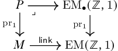
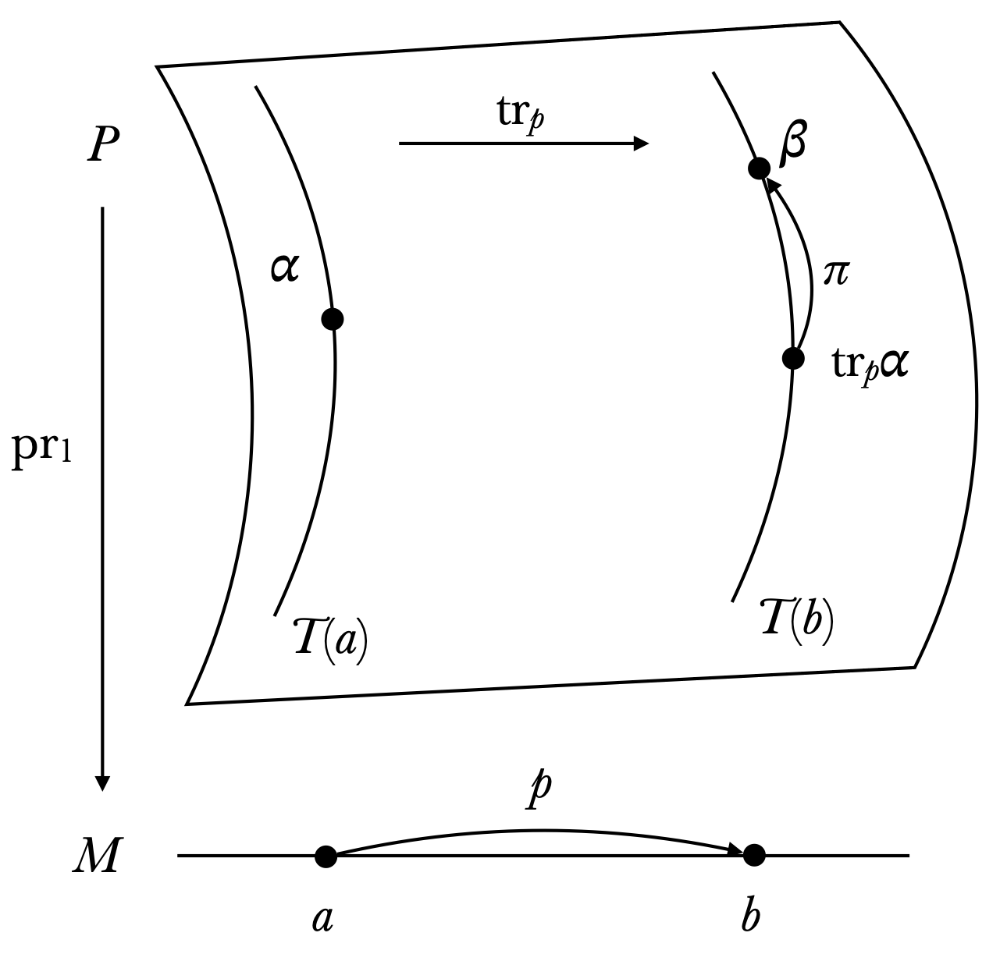
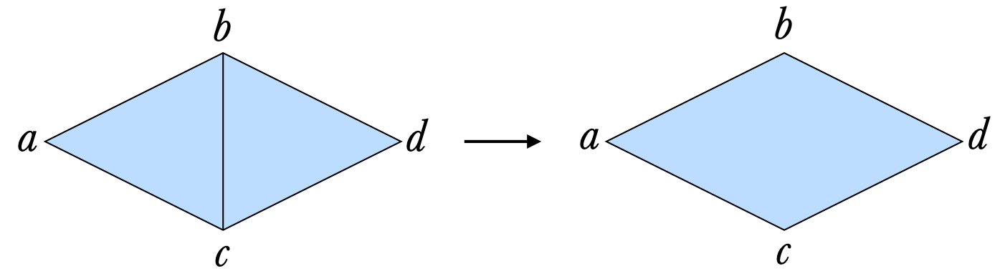
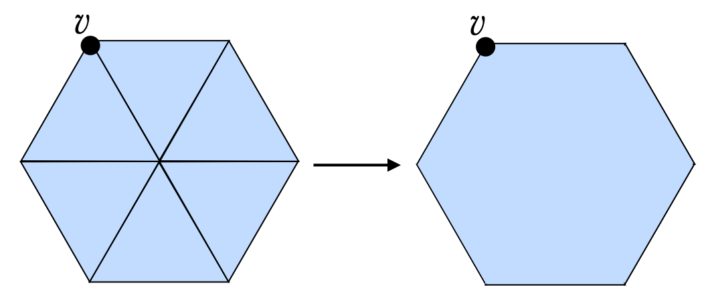
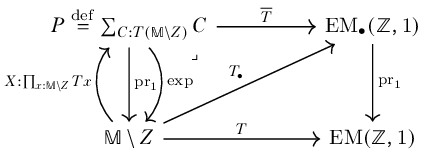
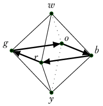
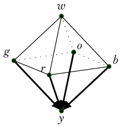
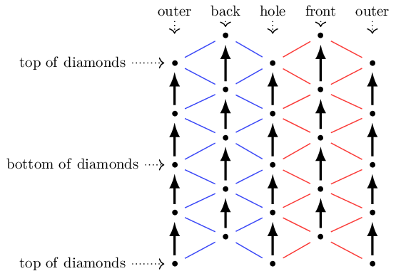
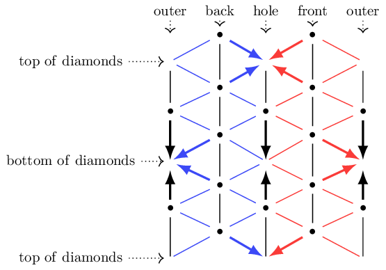

<!DOCTYPE html>
<html lang="en-us">

<head>

  <meta charset="utf-8">
  <meta name="viewport" content="width=device-width, initial-scale=1">
  <meta http-equiv="X-UA-Compatible" content="IE=edge">
  <meta name="generator" content="Source Themes Academic 4.3.1">

  

  
  
  
  
  
    
    
    
  
  

  <meta name="author" content="Greg Langmead">

  
  
  
    
  
  <meta name="description" content="In-progress masters thesis defining connections, curvature, and Chern-Weil theory in the discrete setting of homotopy type theory.">

  
  <link rel="alternate" hreflang="en-us" href="https://greg.langmead.info/writing/towards_gauge_theory_in_hott/">

  


  

  
  
  
  <meta name="theme-color" content="#2962ff">
  

  
  
  
  
    
    <link rel="stylesheet" href="https://cdnjs.cloudflare.com/ajax/libs/academicons/1.8.6/css/academicons.min.css" integrity="sha256-uFVgMKfistnJAfoCUQigIl+JfUaP47GrRKjf6CTPVmw=" crossorigin="anonymous">
    <link rel="stylesheet" href="https://use.fontawesome.com/releases/v5.6.0/css/all.css" integrity="sha384-aOkxzJ5uQz7WBObEZcHvV5JvRW3TUc2rNPA7pe3AwnsUohiw1Vj2Rgx2KSOkF5+h" crossorigin="anonymous">
    <link rel="stylesheet" href="https://cdnjs.cloudflare.com/ajax/libs/fancybox/3.2.5/jquery.fancybox.min.css" integrity="sha256-ygkqlh3CYSUri3LhQxzdcm0n1EQvH2Y+U5S2idbLtxs=" crossorigin="anonymous">

    
    
    
    
      
      
        
          <link rel="stylesheet" href="https://cdnjs.cloudflare.com/ajax/libs/highlight.js/9.15.6/styles/github.min.css" crossorigin="anonymous" title="hl-light">
          <link rel="stylesheet" href="https://cdnjs.cloudflare.com/ajax/libs/highlight.js/9.15.6/styles/dracula.min.css" crossorigin="anonymous" title="hl-dark" disabled>
        
      
    

    

    

  

  
  
  <link rel="stylesheet" href="//fonts.googleapis.com/css?family=Montserrat:400,700|Roboto:400,400italic,700|Roboto+Mono">
  

  
  
  
  <link rel="stylesheet" href="/css/academic.min.54f9a8cab3d0cfc0068978596fe4b279.css">

  

  

  <link rel="manifest" href="/site.webmanifest">
  <link rel="icon" type="image/png" href="/img/icon.png">
  <link rel="apple-touch-icon" type="image/png" href="/img/icon-192.png">

  <link rel="canonical" href="https://greg.langmead.info/writing/towards_gauge_theory_in_hott/">

  
  
  
  
    
    
  
  <meta property="twitter:card" content="summary">
  
  <meta property="og:site_name" content="Long Head">
  <meta property="og:url" content="https://greg.langmead.info/writing/towards_gauge_theory_in_hott/">
  <meta property="og:title" content="Discrete differential geometry in homotopy type theory | Long Head">
  <meta property="og:description" content="In-progress masters thesis defining connections, curvature, and Chern-Weil theory in the discrete setting of homotopy type theory."><meta property="og:image" content="https://greg.langmead.info/img/icon-192.png">
  <meta property="og:locale" content="en-us">
  
  <meta property="article:published_time" content="2024-11-01T00:00:00&#43;00:00">
  
  <meta property="article:modified_time" content="2024-11-01T00:00:00&#43;00:00">
  

  


  <link rel="me" href="https://mathstodon.xyz/@glangmead" />


  <title>Discrete differential geometry in homotopy type theory | Long Head</title>

</head>


<body id="top" data-spy="scroll" data-target="#TableOfContents" data-offset="71" >

  <aside class="search-results" id="search">
  <div class="container">
    <section class="search-header">

      <div class="row no-gutters justify-content-between mb-3">
        <div class="col-6">
          <h1>Search</h1>
        </div>
        <div class="col-6 col-search-close">
          <a class="js-search" href="#"><i class="fas fa-times-circle text-muted" aria-hidden="true"></i></a>
        </div>
      </div>

      <div id="search-box">
        
        
        
      </div>

    </section>
    <section class="section-search-results">

      <div id="search-hits">
        
      </div>

    </section>
  </div>
</aside>


  
<nav class="navbar navbar-light fixed-top navbar-expand-lg py-0" id="navbar-main">
  <div class="container">

    
      <a class="navbar-brand" href="/">Long Head</a>
      
      <button type="button" class="navbar-toggler" data-toggle="collapse"
              data-target="#navbar" aria-controls="navbar" aria-expanded="false" aria-label="Toggle navigation">
        <span><i class="fas fa-bars"></i></span>
      </button>
      

    
    <div class="collapse navbar-collapse" id="navbar">

      
      
      <ul class="navbar-nav ml-auto">
        

        

        
        
        
          
        

        
        
        
        
        
        
          
          
          
            
          
          
        

        <li class="nav-item">
          <a class="nav-link " href="/#about"><span>Home</span></a>
        </li>

        
        

        

        
        
        

        
        
        
        
        
        

        <li class="nav-item">
          <a class="nav-link " href="/cv"><span>CV</span></a>
        </li>

        
        

        

        
        
        
          
        

        
        
        
        
        
        

        <li class="nav-item">
          <a class="nav-link  active" href="/writing"><span>Research</span></a>
        </li>

        
        

        

        
        
        
          
        

        
        
        
        
        
        

        <li class="nav-item">
          <a class="nav-link " href="/publications"><span>Publications</span></a>
        </li>

        
        

        

        
        
        
          
        

        
        
        
        
        
        

        <li class="nav-item">
          <a class="nav-link " href="/posts"><span>Blog</span></a>
        </li>

        
        

      

        

        

        

        
        <li class="nav-item">
          <a class="nav-link js-dark-toggle" href="#"><i class="fas fa-sun fa-moon" aria-hidden="true"></i></a>
        </li>
        

      </ul>

    </div>
  </div>
</nav>


  <article class="article" itemscope itemtype="http://schema.org/Article">

  


  

  
  
  
<div class="article-container pt-3">
  <h1 itemprop="name">Discrete differential geometry in homotopy type theory</h1>

  

  
    


<meta content="2024-11-01 00:00:00 &#43;0000 UTC" itemprop="datePublished">
<meta content="2024-11-01 00:00:00 &#43;0000 UTC" itemprop="dateModified">

<div class="article-metadata">

  
  

  
  <span class="article-date">
    
    
      
    
    <time>Nov 1, 2024</time>
  </span>
  

  

  

  
  

  
  

  
    

  

</div>

    


  


<div class="btn-links mb-3">
  
  


  


<a class="btn btn-outline-primary my-1 mr-1" href="/writing/towards_gauge_theory_in_hott/towards_gauge_theory_in_hott.pdf" target="_blank" rel="noopener">
  PDF
</a>


</div>


  
</div>


  <div class="article-container">

    <div class="article-style" itemprop="articleBody">
      <!DOCTYPE html>
<html xmlns="http://www.w3.org/1999/xhtml" lang="" xml:lang="">
<head>
  <meta charset="utf-8" />
  <meta name="generator" content="pandoc" />
  <meta name="viewport" content="width=device-width, initial-scale=1.0, user-scalable=yes" />
  <meta name="dcterms.date" content="2024-11-01" />
  <style>
    code{white-space: pre-wrap;}
    span.smallcaps{font-variant: small-caps;}
    div.columns{display: flex; gap: min(4vw, 1.5em);}
    div.column{flex: auto; overflow-x: auto;}
    div.hanging-indent{margin-left: 1.5em; text-indent: -1.5em;}
    /* The extra [class] is a hack that increases specificity enough to
       override a similar rule in reveal.js */
    ul.task-list[class]{list-style: none;}
    ul.task-list li input[type="checkbox"] {
      font-size: inherit;
      width: 0.8em;
      margin: 0 0.8em 0.2em -1.6em;
      vertical-align: middle;
    }
    /* CSS for citations */
    div.csl-bib-body { }
    div.csl-entry {
      clear: both;
      margin-bottom: 0em;
    }
    .hanging-indent div.csl-entry {
      margin-left:2em;
      text-indent:-2em;
    }
    div.csl-left-margin {
      min-width:2em;
      float:left;
    }
    div.csl-right-inline {
      margin-left:2em;
      padding-left:1em;
    }
    div.csl-indent {
      margin-left: 2em;
    }  </style>
  <link rel="stylesheet" href="https://fonts.googleapis.com/css2?family=Libre+Baskerville&family=Quattrocento:wght@400">
  <style>
  body {
    font-family: Baskerville, 'Libre Baskerville', serif;
  }
  h1, h2, h3, h4, h5, h6, .abstract-title {
    font-family: Quattrocento, sans-serif;
    font-weight: bold;
    text-align: center;
  }
  </style>
  <p><span class="math inline">\(\newcommand{\textesh}{∫}\)</span> <span
  class="math inline">\(\newcommand{\ensuremath}{}\)</span></p>
  <script src="https://cdnjs.cloudflare.com/polyfill/v3/polyfill.min.js?features=es6"></script>
  <script
  src="https://cdn.jsdelivr.net/npm/mathjax@3/es5/tex-chtml-full.js"
  type="text/javascript"></script>
</head>
<body>
<nav id="TOC" role="doc-toc">
<ul>
<li><a href="#abstract" id="toc-abstract">Abstract</a></li>
<li><a href="#mathieumatical-todos"
id="toc-mathieumatical-todos">Math<sub>i</sub>e<sub>u</sub>matical
todos</a></li>
<li><a href="#overview" id="toc-overview"><span
class="toc-section-number">1</span> Overview</a>
<ul>
<li><a href="#future-work" id="toc-future-work"><span
class="toc-section-number">1.1</span> Future work</a></li>
</ul></li>
<li><a href="#torsors-and-principal-bundles"
id="toc-torsors-and-principal-bundles"><span
class="toc-section-number">2</span> Torsors and principal bundles</a>
<ul>
<li><a href="#univalent-replacement-for-torsors"
id="toc-univalent-replacement-for-torsors"><span
class="toc-section-number">2.1</span> Univalent replacement for
torsors</a></li>
<li><a href="#pathovers-in-principal-bundles"
id="toc-pathovers-in-principal-bundles"><span
class="toc-section-number">2.2</span> Pathovers in principal
bundles</a></li>
</ul></li>
<li><a href="#combinatorial-manifolds"
id="toc-combinatorial-manifolds"><span
class="toc-section-number">3</span> Combinatorial manifolds</a>
<ul>
<li><a href="#higher-inductive-combinatorial-manifolds"
id="toc-higher-inductive-combinatorial-manifolds"><span
class="toc-section-number">3.1</span> Higher inductive combinatorial
manifolds</a></li>
<li><a href="#sec:polygons" id="toc-sec:polygons"><span
class="toc-section-number">3.2</span> Polygons</a></li>
<li><a href="#the-higher-inductive-type-oo"
id="toc-the-higher-inductive-type-oo"><span
class="toc-section-number">3.3</span> The higher inductive type <span
class="math inline">\(\ensuremath{\mathbb{O}}\)</span></a></li>
<li><a
href="#groupoid-operations-on-higher-inductive-combinatorial-manifolds"
id="toc-groupoid-operations-on-higher-inductive-combinatorial-manifolds"><span
class="toc-section-number">3.4</span> Groupoid operations on higher
inductive combinatorial manifolds</a></li>
</ul></li>
<li><a href="#connections-and-vector-fields"
id="toc-connections-and-vector-fields"><span
class="toc-section-number">4</span> Connections and vector fields</a>
<ul>
<li><a href="#the-function-t" id="toc-the-function-t"><span
class="toc-section-number">4.1</span> The function <span
class="math inline">\(T\)</span></a></li>
<li><a href="#t-on-concatenations-of-faces"
id="toc-t-on-concatenations-of-faces"><span
class="toc-section-number">4.2</span> <span
class="math inline">\(T\)</span> on concatenations of faces</a></li>
<li><a href="#the-torus" id="toc-the-torus"><span
class="toc-section-number">4.3</span> The torus</a></li>
<li><a href="#vector-fields" id="toc-vector-fields"><span
class="toc-section-number">4.4</span> Vector fields</a></li>
<li><a href="#index-of-a-vector-field"
id="toc-index-of-a-vector-field"><span
class="toc-section-number">4.5</span> Index of a vector field</a></li>
<li><a href="#equality-of-total-index-and-total-curvature"
id="toc-equality-of-total-index-and-total-curvature"><span
class="toc-section-number">4.6</span> Equality of total index and total
curvature</a></li>
<li><a href="#identification-with-euler-characteristic"
id="toc-identification-with-euler-characteristic"><span
class="toc-section-number">4.7</span> Identification with Euler
characteristic</a></li>
</ul></li>
<li><a href="#why-this-works" id="toc-why-this-works"><span
class="toc-section-number">5</span> Why this works</a>
<ul>
<li><a href="#classical-connections"
id="toc-classical-connections"><span
class="toc-section-number">5.1</span> Classical connections</a>
<ul>
<li><a href="#gauge-theory" id="toc-gauge-theory"><span
class="toc-section-number">5.1.1</span> Gauge theory</a></li>
</ul></li>
<li><a href="#type-theory-version" id="toc-type-theory-version"><span
class="toc-section-number">5.2</span> Type theory version</a>
<ul>
<li><a href="#gauge-theory-revisited"
id="toc-gauge-theory-revisited"><span
class="toc-section-number">5.2.1</span> Gauge theory revisited</a></li>
</ul></li>
</ul></li>
</ul>
</nav>
<h1 class="unnumbered" id="abstract">Abstract</h1>
<p>Homotopy type theory can capture some concepts of differential
geometry in two dimensions including connections, curvature, and vector
fields. We show this by focusing on combinatorial manifolds, which are
discrete in the sense of real cohesion<span class="citation"
data-cites="shulman_cohesion"> (<a href="#ref-shulman_cohesion"
role="doc-biblioref">Shulman, 2017</a>)</span>, and drawing inspiration
from the field of discrete differential geometry. We prove the
Gauss-Bonnet theorem and Poincaré-Hopf theorem in this setting.</p>
<blockquote>
<p>“It is always ourselves we work on, whether we realize it or not.
There is no other work to be done in the world.” — Stephen Talbott,
<em>The Future Does Not Compute</em><span class="citation"
data-cites="talbott"> (<a href="#ref-talbott"
role="doc-biblioref">Talbott, 1995</a>)</span></p>
</blockquote>
<h1 class="unnumbered"
id="mathieumatical-todos">Math<sub>i</sub>e<sub>u</sub>matical
todos</h1>
<ol>
<li><p>How to make a principal bundle that is a sigma type?</p></li>
<li><p>(done) Improve the introduction of HoTT terms like pathovers,
<span class="math inline">\(\ensuremath{\mathsf{ap}}\)</span>, <span
class="math inline">\(\mathsf{tr}\)</span>, and <span
class="math inline">\(\mathsf{apd}\)</span>.</p></li>
<li><p>Prove we have terms and paths in the universe and not just maps
between polygons.</p></li>
<li><p>(done) Introduce a “realization” operation from simplicial sets
to HITs.</p></li>
<li><p>Spell out how the faces of a higher combinatorial manifold form a
groupoid, with careful definitions.</p></li>
<li><p>Spell out what I mean by the replacement manifold <span
class="math inline">\(\ensuremath{\mathbb{M}}_Z\)</span> that has points
removed.</p></li>
<li><p>Emphasize that vector fields are nonvanishing and partial,
because they cannot be total.</p></li>
<li><p>Commit to the definition of a connection, not relying on
vibes.</p></li>
<li><p>Confirm definition of flatness.</p></li>
<li><p>Fix Leibniz rule or remove (it’s independent of everything else,
just fun).</p></li>
</ol>
<p>Notes</p>
<p>curvature must be defined on any circle (polygon) in the manifold?
but classical curvature is always local, doesn’t need to be defined on
non-bounding loops. holonomy is defined on arbitrary loops, curvature
only on loops bounding a 2-cell.</p>
<p>total curvature: one approach: calculate total curvature ad-hoc in my
examples, and point to what is needed in general compute total curv of
octahedron twice and show they agree</p>
<p>define connections directly on the HIT constructor (dim 1) (higher
connections are on the higher skeleta ctors)</p>
<p>ponder this falsehood: truer analogy to classical connections: define
a tangent bundle on the HIT, and parallel the classical construction of
lifting paths and so on</p>
<p>i don’t need to bring in EMzn. EMz1 is the space of circles. keep it,
due to link mapping there. i can even have nonorientable tangent
bundles. can use scoccola to specify the condition on orientability and
relate to kz2 S1 -&gt; Aut S1 -&gt; Z2, extension of Z2 by S1, using Z2
as flip take B of these (or K, 1) map to BAut S1 will lift to BS1
exactly when the map to BZ2 is trivial</p>
<h1 data-number="1" id="overview"><span
class="header-section-number">1</span> Overview</h1>
<p>We will define</p>
<ul>
<li><p>combinatorial 2-manifolds</p></li>
<li><p>principal circle bundles of tangent bundles</p></li>
<li><p>vector fields,</p></li>
</ul>
<p>and then observe emerging from those definitions the presence of</p>
<ul>
<li><p>connections</p></li>
<li><p>curvature</p></li>
<li><p>the index of a vector field,</p></li>
</ul>
<p>and prove</p>
<ul>
<li><p>the Leibniz formula</p></li>
<li><p>the Gauss-Bonnet theorem</p></li>
<li><p>and the Poincaré-Hopf theorem.</p></li>
</ul>
<p>We will consider functions <span class="math inline">\(M\to
\mathrm{EM}(\ensuremath{\mathbb{Z}},1)\)</span> where <span
class="math inline">\(\mathrm{EM}(\ensuremath{\mathbb{Z}},1)\)</span> is
the connected component in the universe of the Eilenberg-MacLane space
<span
class="math inline">\(\mathrm{K}(\ensuremath{\mathbb{Z}},1)\)</span>
which we will take to be <span class="math inline">\(S^1\)</span>, and
where <span class="math inline">\(M\)</span> is a combinatorial manifold
of dimension 2, which is a simplicial complex encoded in a higher
inductive type, such that each vertex has a neighborhood that looks like
a disk with a discrete circle boundary (i.e. a polygon). We can call
terms <span
class="math inline">\(C:\mathrm{EM}(\ensuremath{\mathbb{Z}},1)\)</span>
“mere circles.”</p>
<p>We will see in Section <a href="#sec:polygons"
data-reference-type="ref" data-reference="sec:polygons">3.2</a> that
<span
class="math inline">\(\mathrm{EM}(\ensuremath{\mathbb{Z}},1)\)</span>
contains all the polygons. We will construct a map <span
class="math inline">\(\mathop{\mathrm{\mathsf{link}}}:M\to\mathrm{EM}(\ensuremath{\mathbb{Z}},1)\)</span>
that maps each vertex to the polygon consisting of its neighbors. Then
we can consider the type of pointed mere circles <span
class="math inline">\(\mathrm{EM_{\bullet}}(\ensuremath{\mathbb{Z}},1)\stackrel{\mathrm{def}}{=}\sum_{Y:\mathrm{EM}(\ensuremath{\mathbb{Z}},1)}Y\)</span>
as well as the first projection that forgets the point. This is a
univalent fibration (univalent fibrations are always equivalent to a
projection of a type of pointed types to some connected component of the
universe<span class="citation" data-cites="christensen_univalence"> (<a
href="#ref-christensen_univalence" role="doc-biblioref">Christensen,
2015</a>)</span>). If we form the pullback</p>
<p></p>
<p>then we have a bundle of mere circles, with total space given by the
<span class="math inline">\(\sum_{}\)</span>-type construction. We will
show that this is not a principal bundle, i.e. a bundle of torsors.
Torsors are types with the additional structure of a group action. But
if <span class="math inline">\(\mathop{\mathrm{\mathsf{link}}}\)</span>
satisfies an additional property (amounting to an orientation) then the
pullback is a principal fibration, i.e. <span
class="math inline">\(\mathop{\mathrm{\mathsf{link}}}\)</span> factors
through a map <span
class="math inline">\(\mathrm{K}(\ensuremath{\mathbb{Z}},2)\to\mathrm{EM}(\ensuremath{\mathbb{Z}},1)\)</span>,
where <span
class="math inline">\(\mathrm{K}(\ensuremath{\mathbb{Z}},2)\)</span> is
an Eilenberg-Mac Lane space.</p>
<p>We will investigate that the data in dimensions 1 and 2 of <span
class="math inline">\(\mathop{\mathrm{\mathsf{link}}}\)</span> can be
thought of as a connection, notably one that is not necessarily flat.
Moreover, lifting <span
class="math inline">\(\mathop{\mathrm{\mathsf{link}}}\)</span> to <span
class="math inline">\(\mathop{\mathrm{\mathsf{link}}}_\bullet:M\to\mathrm{EM_{\bullet}}(\ensuremath{\mathbb{Z}},1)\)</span>
can be thought of as a nonvanishing vector field. There will in general
not be a total lift, just a partial function. The domain of <span
class="math inline">\(\mathop{\mathrm{\mathsf{link}}}_\bullet\)</span>
will have a boundary of circles, and the winding number on these can be
thought of as the index of <span
class="math inline">\(\mathop{\mathrm{\mathsf{link}}}_\bullet\)</span>.
We can then examine the total curvature and the total index and prove
that they are equal, and equal to the usual Euler characteristic. This
will simultaneously prove the Poincaré-Hopf theorem and Gauss-Bonnet
theorem in 2 dimensions, for combinatorial manifolds. This is similar to
the classical proof of Hopf<span class="citation" data-cites="hopf"> (<a
href="#ref-hopf" role="doc-biblioref">Hopf, 1983</a>)</span>, presented
in detail in Needham<span class="citation" data-cites="needham"> (<a
href="#ref-needham" role="doc-biblioref">Needham, 2021</a>)</span>.</p>
<p>Because the codomain <span
class="math inline">\(\mathrm{K}(\ensuremath{\mathbb{Z}},2)\)</span> has
an H-space structure, we might ask about how the action on paths of
<span class="math inline">\(\mathop{\mathrm{\mathsf{link}}}\)</span>, or
any function for that matter, interacts with pointwise multiplication.
This will lead us to the Leibniz formula, which emerges simply from
horizontal composition in the codomain.</p>
<h2 data-number="1.1" id="future-work"><span
class="header-section-number">1.1</span> Future work</h2>
<p>The results of this note can be extended in many directions. There
are higher-dimensional generalizations of Gauss-Bonnet, including the
theory of characteristic classes and Chern-Weil theory (which links
characteristic classes to connections and curvature). These would
involve working with nonabelian groups like <span
class="math inline">\(SO(n)\)</span> and sphere bundles. Results from
gauge theory could be imported into HoTT, as well as results from
surgery theory and other topological constructions that may be
especially amenable to this discrete setting. Relationships with
computer graphics and discrete differential geometry<span
class="citation" data-cites="crane_ddg"> (<a href="#ref-crane_ddg"
role="doc-biblioref">Crane <em>et al.</em>, 2013</a>)</span><span
class="citation" data-cites="crane_connections"> (<a
href="#ref-crane_connections" role="doc-biblioref">Crane,
2010</a>)</span> could be explored. Finally, a theory that reintroduces
smoothness could allow more formal versions of the analogies explored
here.</p>
<h1 data-number="2" id="torsors-and-principal-bundles"><span
class="header-section-number">2</span> Torsors and principal
bundles</h1>
<p>The classical theory of principal bundles tells us to look for an
appropriate classifying space of torsors to map into. Homotopy type
theory tells us that classifying spaces are univalent fibrations. The
type of torsors is not a priori such a fibration, so we’ll do some work
to make that happen. This will constitute the codomain of the
investigation.</p>
<div class="mydef">
<p><strong>Definition 1</strong>. <em>Let <span
class="math inline">\(G\)</span> be a group (a set with the usual
classical structure and properties). A <strong><span
class="math inline">\(G\)</span>-set</strong> is a set <span
class="math inline">\(X\)</span> equipped with a homomorphism <span
class="math inline">\(\phi:G\to\mathop{\mathrm{Aut}}(X)\)</span>. If in
addition we have a term <span
class="math display">\[\mathsf{is\_torsor}:||X||_{-1}\times
\prod_{g:G}\mathsf{is\_equiv}(\phi(-,x):G\to X)\]</span> then we call
this data a <strong><span
class="math inline">\(G\)</span>-torsor</strong>. Denote the type of
<span class="math inline">\(G\)</span>-torsors by <span
class="math inline">\(TG\)</span>.</em></p>
</div>
<p>If <span class="math inline">\((X,\phi),(Y,\psi):TG\)</span> then a
<span class="math inline">\(G\)</span>-equivariant map is a function
<span class="math inline">\(f:X\to Y\)</span> such that <span
class="math inline">\(f(\phi(g,x))=\psi(g,f(x))\)</span>. Denote the
type of <span class="math inline">\(G\)</span>-equivariant maps by <span
class="math inline">\(X\to_G Y\)</span>.</p>
<div class="mylemma">
<p><strong>Lemma 1</strong>. <em>There is a natural equivalence <span
class="math inline">\((X=_{TG}Y) \simeq (X\to_G Y)\)</span>.</em></p>
</div>
<p>Denote by <span class="math inline">\(*\)</span> the torsor given by
<span class="math inline">\(G\)</span> actions on its underlying set by
left-translation. This serves as a basepoint for <span
class="math inline">\(TG\)</span> and we have a group isomorphism <span
class="math inline">\(\Omega TG\simeq G\)</span>.</p>
<div class="mylemma">
<p><strong>Lemma 2</strong>. <em>A <span
class="math inline">\(G\)</span>-set <span
class="math inline">\((X,\phi)\)</span> is a <span
class="math inline">\(G\)</span>-torsor if and only if there merely
exists a <span class="math inline">\(G\)</span>-equivariant equivalence
<span class="math inline">\(*\to_G X\)</span>.</em></p>
</div>
<div class="mycor">
<p><strong>Corollary 1</strong>. <em>The pointed type <span
class="math inline">\((TG,*)\)</span> is a <span
class="math inline">\(\mathrm{K}(G,1)\)</span>.</em></p>
</div>
<h2 data-number="2.1" id="univalent-replacement-for-torsors"><span
class="header-section-number">2.1</span> Univalent replacement for
torsors</h2>
<p>The homotopy type theory of cohomology and bundles tells us that the
type of principal <span class="math inline">\(G\)</span>-bundles on a
type <span class="math inline">\(M\)</span> is the type <span
class="math inline">\(M\to\mathrm{K}(G,1)\)</span>. But this is a type
of structured types, a connected component of <span
class="math inline">\(G\)</span>-sets rather than a connected component
of the universe. The paths <em>in the universe</em> between two <span
class="math inline">\(G\)</span>-sets is equivalent to the type of
equivalences between the <em>underlying types</em>, not just the
equivariant equivalences. We wish to work with a connected component of
the universe <span class="math inline">\(\mathcal{U}\)</span>.</p>
<p>We’ll resolve this problem with the following discussion, following
Scoccola<span class="citation" data-cites="sco"> (<a href="#ref-sco"
role="doc-biblioref">Scoccola, 2020</a>)</span>. We will state the
definitions and theorems for a general <span
class="math inline">\(\mathrm{K}(G,n)\)</span> but we will be focusing
on <span class="math inline">\(n=1\)</span> in this note.</p>
<div class="mydef">
<p><strong>Definition 2</strong>. <em>Let <span
class="math inline">\(\mathrm{EM}(G,n)\stackrel{\mathrm{def}}{=}\mathop{\mathrm{BAut}}(\mathrm{K}(G,n))\stackrel{\mathrm{def}}{=}\sum_{Y:\mathcal{U}}||Y\simeq
\mathrm{K}(G,n)||_{-1}\)</span>. A <strong><span
class="math inline">\(\mathrm{K}(G,n)\)</span>-bundle</strong> on a type
<span class="math inline">\(M\)</span> is the fiber of a map <span
class="math inline">\(M\to\mathrm{EM}(G,n)\)</span>.</em></p>
</div>
<p>Scoccola uses two self-maps on the universe: suspension followed by
<span class="math inline">\((n+1)\)</span>-truncation <span
class="math inline">\(||\Sigma||_{n+1}\)</span> and forgetting a point
<span class="math inline">\(F_\bullet\)</span> to form the composition
<span
class="math display">\[\mathrm{EM}(G,n)\xrightarrow[]{||\Sigma||_{n+1}}
\mathrm{EM}_{\bullet\bullet}(G,n+1)\xrightarrow[]{F_\bullet}\mathrm{EM_{\bullet}}(G,n+1)\]</span>
from types to types with two points (north and south), to pointed types
(by forgetting the south point).</p>
<div class="mydef">
<p><strong>Definition 3</strong>. <em>Given <span
class="math inline">\(f:M\to\mathrm{EM}(G,n)\)</span>, the
<strong>associated action of <span class="math inline">\(M\)</span> on
<span class="math inline">\(G\)</span></strong>, denoted by <span
class="math inline">\(f_\bullet\)</span> is defined to be <span
class="math inline">\(f_\bullet=F_\bullet\circ||\Sigma||_{n+1}\circ
f\)</span>.</em></p>
</div>
<div class="mythm">
<p><strong>Theorem 1</strong>. <em>(Scoccola<span class="citation"
data-cites="sco"> (<a href="#ref-sco" role="doc-biblioref">Scoccola,
2020</a>)</span> Proposition 2.39). A <span
class="math inline">\(\mathrm{K}(G,n)\)</span> bundle <span
class="math inline">\(f:M\to\mathrm{EM}(G,n)\)</span> is equivalent to a
map in <span class="math inline">\(M\to\mathrm{K}(G,n+1)\)</span>, and
so is a principal fibration, if and only if the associated action <span
class="math inline">\(f_\bullet\)</span> is contractible.</em></p>
</div>
<p>Let’s relate this to <em>orientation</em>. Note that the obstruction
in the theorem is about a map into <span
class="math inline">\(\mathrm{EM_{\bullet}}(G,n+1)\)</span> and further
note that <span class="math inline">\(\mathrm{EM_{\bullet}}(G,n)\simeq
\mathrm{K}(\mathop{\mathrm{Aut}}G,1)\)</span> (independent of <span
class="math inline">\(n\)</span>). The theorem says that the data of a
map into <span class="math inline">\(\mathrm{EM}(G,n)\)</span> factors
into data about a map into <span
class="math inline">\(\mathrm{K}(G,n+1)\)</span> and one into <span
class="math inline">\(\mathrm{K}(\mathop{\mathrm{Aut}}G,1)\)</span>.
Informally, <span class="math inline">\(\mathrm{EM}(G,n)\)</span> is a
little too large to be a <span class="math inline">\(K(G,n+1)\)</span>,
as it includes data about automorphisms of <span
class="math inline">\(G\)</span>.</p>
<p>In the special case of <span
class="math inline">\(\mathrm{EM}(\ensuremath{\mathbb{Z}},1)\)</span>
the conditions of the theorem are met when <span
class="math inline">\(f_\bullet:M\to\mathrm{K}(\mathop{\mathrm{Aut}}\ensuremath{\mathbb{Z}},
1)\)</span> is contractible. <span
class="math inline">\(\mathop{\mathrm{Aut}}\ensuremath{\mathbb{Z}}\)</span>
consists of the <span
class="math inline">\(\ensuremath{\mathbb{Z}}/2\ensuremath{\mathbb{Z}}\)</span>
worth of outer automorphisms given by multiplication by <span
class="math inline">\(\pm 1\)</span>. Symmetries of the circle are our
discrete stand-in for the matrix group <span
class="math inline">\(O(2)\)</span>, which contains both rotations and
(orientation-reversing) reflections of the plane. Requiring a
contractible induced map to <span class="math inline">\(\pm 1\)</span>
amounts to a choice of direction for all the circles, and so deserves
the name “<span class="math inline">\(f\)</span> is
<em>orientable</em>.” In addition <span
class="math inline">\(f_\bullet\)</span> deserves to be called the first
Stiefel-Whitney class of <span class="math inline">\(f\)</span>, and the
requirement here is that it vanishes.</p>
<div class="mynote">
<p><strong>Note 1</strong>. <em>Reinterpreting more of the theory of
characteristic classes would be an enlightening future project. Defining
a Chern class and Euler class in 2 dimensions is a goal of this note,
but we will not prove all the various laws these classes satisfy (the
Whitney sum formula and so on). Nonabelian matrix Lie groups such as
<span class="math inline">\(SO(n)\)</span> and <span
class="math inline">\(SU(n)\)</span> are not fully imported into
homotopy type theory, but recall that some classical results from the
theory of characteristic classes are obtained by replacing the group
with a maximal torus, which should be a smaller leap from what is
presented here<span class="citation" data-cites="splitting_principle">
(<a href="#ref-splitting_principle" role="doc-biblioref">nLab authors,
2024a</a>)</span>.</em></p>
</div>
<p>In summary, we can continue to work with the univalent fibration
<span class="math inline">\(\mathrm{EM}(G,1)\)</span> and still know
that we are also studying principal <span
class="math inline">\(\mathrm{K}(G,1)\)</span>-fibrations, if the bundle
is orientable.</p>
<h2 data-number="2.2" id="pathovers-in-principal-bundles"><span
class="header-section-number">2.2</span> Pathovers in principal
bundles</h2>
<p>Suppose we have <span
class="math inline">\(T:M\to\mathrm{EM}(\ensuremath{\mathbb{Z}},1)\)</span>
and <span
class="math inline">\(P\stackrel{\mathrm{def}}{=}\sum_{x:M}T(x)\)</span>.
We adopt a convention of naming objects in <span
class="math inline">\(M\)</span> with Latin letters, and the
corresponding structures in <span class="math inline">\(P\)</span> with
Greek letters. Recall that if <span class="math inline">\(p:a=_M
b\)</span> then <span class="math inline">\(T\)</span> acts on <span
class="math inline">\(p\)</span> with what’s called the <em>action on
paths</em>, denoted <span
class="math inline">\(\ensuremath{\mathsf{ap}}(T)(p):T(a)=T(b)\)</span>.
This is a path in the codomain, which in this case is a type of types.
Type theory also provides a function called <em>transport</em>, denoted
<span class="math inline">\(\mathsf{tr}_p:T(a)\to T(b)\)</span> which
acts on the fibers of <span class="math inline">\(P\)</span>. <span
class="math inline">\(\mathsf{tr}_p\)</span> acts on the terms of the
types <span class="math inline">\(T(a)\)</span> and <span
class="math inline">\(T(b)\)</span>, and univalence tells us this is the
isomorphism corresponding to <span
class="math inline">\(\ensuremath{\mathsf{ap}}(T)(p)\)</span>.</p>
<p>Type theory also tells us that paths in <span
class="math inline">\(P\)</span> are given by pairs of paths: a path
<span class="math inline">\(p:a=_M b\)</span> in the base, and a
pathover <span
class="math inline">\(\pi:\mathsf{tr}_p(\alpha)=_{T(b)}\beta\)</span>
between <span class="math inline">\(\alpha:T(a)\)</span> and <span
class="math inline">\(\beta:T(b)\)</span> in the fibers. We can’t
directly compare <span class="math inline">\(\alpha\)</span> and <span
class="math inline">\(\beta\)</span> since they are of different types,
so we apply transport to one of them. We say <span
class="math inline">\(\pi\)</span> lies over <span
class="math inline">\(p\)</span>. See Figure <a href="#fig:pathovers"
data-reference-type="ref" data-reference="fig:pathovers">1</a>.</p>
<figure id="fig:pathovers">

<figcaption>A path <span class="math inline">\(\pi\)</span> over the
path <span class="math inline">\(p\)</span> in the base involves the
transport function.</figcaption>
</figure>
<p>Lastly we want to recall that in the presence of a section <span
class="math inline">\(s:M\to P\)</span> there is a dependent
generalization of <span
class="math inline">\(\ensuremath{\mathsf{ap}}\)</span> called <span
class="math inline">\(\mathsf{apd}\)</span>: <span
class="math inline">\(\mathsf{apd}_p(s):\mathsf{tr}_p(s(a))=s(b)\)</span>
which is a pathover between the two values of the section over the
basepoints of the path <span class="math inline">\(p\)</span>.</p>
<h1 data-number="3" id="combinatorial-manifolds"><span
class="header-section-number">3</span> Combinatorial manifolds</h1>
<p>We will adapt to higher inductive types in a straightforward manner
the classical construction of <em>combinatorial manifolds</em>. See for
example the classic book by Kirby and Siebenmann<span class="citation"
data-cites="kirby_siebenmann"> (<a href="#ref-kirby_siebenmann"
role="doc-biblioref">Kirby &amp; Siebenmann, 1977</a>)</span>. These are
a subclass of simplicial complexes.</p>
<div class="mydef">
<p><strong>Definition 4</strong>. <em>An <strong>abstract simplicial
complex <span class="math inline">\(M\)</span> of dimension <span
class="math inline">\(n\)</span></strong> consists of a set <span
class="math inline">\(M_0\)</span> of vertices, and for each <span
class="math inline">\(0&lt;k\leq n\)</span> a set <span
class="math inline">\(M_k\)</span> of subsets of <span
class="math inline">\(M_0\)</span> of cardinality <span
class="math inline">\(k+1\)</span>, such that any <span
class="math inline">\((j+1)\)</span>-element subset of <span
class="math inline">\(M_k\)</span> is an element of <span
class="math inline">\(M_j\)</span>. The elements of <span
class="math inline">\(M_k\)</span> are called <strong><span
class="math inline">\(k\)</span>-faces</strong>. Denote by <span
class="math inline">\(\mathsf{SimpCompSet_n}\)</span> the type of
abstract simplicial complexes of dimension <span
class="math inline">\(n\)</span> (where the suffix <span
class="math inline">\(\mathsf{Set}\)</span> reminds us that this is a
type of sets).</em></p>
</div>
<p>Note that we don’t require all subsets of <span
class="math inline">\(M_0\)</span> to be included – that would make
<span class="math inline">\(M\)</span> an individual simplex. A
simplicial complex is a family of simplices that are identified along
various faces.</p>
<div class="mydef">
<p><strong>Definition 5</strong>. <em>In an abstract simplicial complex
<span class="math inline">\(M\)</span> of dimension <span
class="math inline">\(n\)</span>, the <strong>link</strong> of a vertex
<span class="math inline">\(v\)</span> is the <span
class="math inline">\(n-1\)</span>-face containing every face <span
class="math inline">\(m\in M_{n-1}\)</span> such that <span
class="math inline">\(v\notin m\)</span> and <span
class="math inline">\(m\cup v\)</span> is an <span
class="math inline">\(n\)</span>-face of <span
class="math inline">\(M\)</span>.</em></p>
</div>
<p>The link is all the neighboring vertices of <span
class="math inline">\(v\)</span> and the codimension 1 faces joining
those to each other. See for example Figure <a href="#fig:link"
data-reference-type="ref" data-reference="fig:link">2</a>.</p>
<figure id="fig:link">

<figcaption>The link of <span class="math inline">\(v\)</span> in this
complex consists of the vertices <span
class="math inline">\(\{a,b,c,d,e,f\}\)</span> and the edges <span
class="math inline">\(\{ab,bc,cd,de,ef,fa\}\)</span>, forming a
hexagon.</figcaption>
</figure>
<div class="mydef">
<p><strong>Definition 6</strong>. <em>A <strong>combinatorial
manifold</strong> (or <strong>combinatorial triangulation</strong>) of
dimension <span class="math inline">\(n\)</span> is a simplicial complex
of dimension <span class="math inline">\(n\)</span> such that the link
of every vertex is a simplicial sphere of dimension <span
class="math inline">\(n-1\)</span> (i.e. its geometric realization is
homeomorphic to an <span class="math inline">\(n-1\)</span>-sphere).
Denote by <span class="math inline">\(\mathsf{CombMfdSet_n}\)</span> the
type of combinatorial manifolds of dimension <span
class="math inline">\(n\)</span> (which the notation again reminds us
are sets).</em></p>
</div>
<p>In a 2-dimensional combinatorial manifold the link is a polygon. See
Figures <a href="#fig:sphere_triangulation" data-reference-type="ref"
data-reference="fig:sphere_triangulation">3</a>, <a
href="#fig:torus_wiki_triangulation" data-reference-type="ref"
data-reference="fig:torus_wiki_triangulation">4</a>, and <a
href="#fig:genus3_wiki_triangulation" data-reference-type="ref"
data-reference="fig:genus3_wiki_triangulation">5</a> for some examples
of 2-dimensional combinatorial manifolds of genus 0, 1, and 3.</p>
<p>A classical 1940 result of Whitehead, building on Cairn, states that
every smooth manifold admits a combinatorial triangulation<span
class="citation" data-cites="whitehead_triangulation"> (<a
href="#ref-whitehead_triangulation" role="doc-biblioref">Whitehead,
1940</a>)</span>. So it appears reasonably well motivated to study this
class of objects.</p>
<figure id="fig:sphere_triangulation">

<figcaption>A combinatorial triangulation of a sphere, created with
stripy.</figcaption>
</figure>
<figure id="fig:torus_wiki_triangulation">

<figcaption>A torus with an interesting triangulation, from Wikipedia.
The links have various vertex counts from 5-7. Clearly a constant value
of 6 would also work. (By Ag2gaeh - Own work, CC BY-SA 3.0,
https://commons.wikimedia.org/w/index.php?curid=30856793)</figcaption>
</figure>
<figure id="fig:genus3_wiki_triangulation">

<figcaption>A 3-holes torus with triangulation, from Wikipedia. (By
Ag2gaeh - Own work, CC BY-SA 3.0,
https://commons.wikimedia.org/wiki/File:Tri-brezel.svg)</figcaption>
</figure>
<h2 data-number="3.1"
id="higher-inductive-combinatorial-manifolds"><span
class="header-section-number">3.1</span> Higher inductive combinatorial
manifolds</h2>
<p>We will convert a simplicial complex <span
class="math inline">\(M\)</span> of dimension at most 2 to a higher
inductive type, in two steps.</p>
<div class="mydef">
<p><strong>Definition 7</strong>. <em>Define <span
class="math inline">\(\mathsf{CombMfd_2}\)</span> to be the type of
<strong>higher inductive constructors of combinatorial manifolds of
dimension at most 2</strong> and let <span
class="math inline">\(\mathcal{H}:\mathsf{CombMfdSet_2}\to\mathsf{CombMfd_2}\)</span>
be a map from a combinatorial manifold to such a HIT following this
method:</em></p>
<ol>
<li><p><em>vertices: a function <span
class="math inline">\(\mathsf{v_0}:M_0\to \mathcal{H}(M)\)</span>
serving as the 0-dimensional constructors</em></p></li>
<li><p><em>edges: a function <span
class="math inline">\(\mathsf{v_1}\)</span> on 1-faces, sending <span
class="math inline">\(\{a, b\}\mapsto
\mathsf{v_0}(a)=\mathsf{v_0}(b)\)</span></em></p></li>
<li><p><em>2-faces: a function <span
class="math inline">\(\mathsf{v_2}\)</span> on 2-faces, sending <span
class="math inline">\(\{a, b, c\}\mapsto \ensuremath{\mathsf{refl}}_a =
\mathsf{v_1}(\{a, b\})\cdot \mathsf{v_1}(\{b, c\})\cdot
\mathsf{v_1}(\{a, c\})^{-1}\)</span>.</em></p></li>
</ol>
</div>
<p>We will assume there is a rigorous theory of such HITs, and that at
least up to dimension 2 there are no obstructions to simply copying over
the combinatorial data to the HIT constructors. See for example David
Wärn’s recent work on pushouts<span class="citation"
data-cites="warn_pushouts"> (<a href="#ref-warn_pushouts"
role="doc-biblioref">Wärn, 2024</a>)</span>.</p>
<div class="mydef">
<p><strong>Definition 8</strong>. <em>Denote by <span
class="math inline">\(\mathcal{R}:\mathsf{CombMfd_2}\to\mathsf{Type}\)</span>
the process of generating a type from the HIT data (which we refer to as
<strong>realization</strong>). Note that <span
class="math inline">\(\mathcal{R}(\mathcal{H}(M))\)</span> is not in
general a set, and may not even be 2-truncated for an arbitrary
2-dimensional combinatorial manifold <span
class="math inline">\(M:\mathsf{CombMfdSet_2}\)</span>.</em></p>
</div>
<p>We’re making the distinction between <span
class="math inline">\(\mathcal{H}\)</span> and <span
class="math inline">\(\mathcal{R}\)</span> because we will work so
closely with the constructors when we map out of them, but of course
type theory tells us that to define a map out of the type <span
class="math inline">\(\mathcal{R}(\mathcal{H}(M))\)</span> we just have
to define it on the constructors, so the distinction is not very
sharp.</p>
<h2 data-number="3.2" id="sec:polygons"><span
class="header-section-number">3.2</span> Polygons</h2>
<p>We will now start looking at some examples, first by defining a type
that is important both for the domain and the codomain of mere circles:
a square.</p>
<div class="mydef">
<p><strong>Definition 9</strong>. <em>The higher inductive type <span
class="math inline">\(C_4\)</span> (where C stands for “circle”). <span
class="math display">\[\begin{aligned}
C_4 &amp;: \mathsf{Type}\\
c_1, c_2, c_3, c_4 &amp;: C_4 \\
c_1c_2 &amp;: c_1 = c_2 \\
c_2c_3 &amp;: c_2 = c_3 \\
c_3c_4 &amp;: c_3 = c_4 \\
c_4c_1 &amp;: c_4 = c_1 \\
\end{aligned}\]</span></em></p>
</div>
<figure>

<figcaption>The HIT <span
class="math inline">\(C_4\)</span>.</figcaption>
</figure>
<p>The standard HoTT circle itself is a non-example of a combinatorial
manifold since it lacks the second vertex of the edge:</p>
<div class="mydef">
<p><strong>Definition 10</strong>. <em>The higher inductive type <span
class="math inline">\(S^1\)</span>: <span
class="math display">\[\begin{aligned}
S^1&amp;:\mathsf{Type}\\
\mathsf{base}&amp;:S^1\\
\mathsf{loop}&amp;:\mathsf{base}=\mathsf{base}
\end{aligned}\]</span></em></p>
</div>
<p>Nonetheless, all polygons are equivalent to each other and to <span
class="math inline">\(S^1\)</span>.</p>
<div id="lem:c4equiv" class="mylemma">
<p><strong>Lemma 3</strong>. <em>Define the function <span
class="math inline">\(\ell:C_4\to S^1\)</span> by <span
class="math display">\[\begin{aligned}
\ell(c_i)&amp;=\mathsf{base}, i=1, 2, 3, 4 \\
\ell(c_1c_2)&amp;=\mathsf{loop} \\
\ell(c_2c_3)=\ell(c_3c_4)=\ell(c_4c_1)&amp;=\ensuremath{\mathsf{refl}}_{\mathsf{base}}
\end{aligned}\]</span> and define the function <span
class="math inline">\(s_1:S^1\to C_4\)</span> by <span
class="math inline">\(s_1(\mathsf{base})=c_1\)</span> and <span
class="math inline">\(s_1(\mathsf{loop})=c_1c_2\cdot c_2c_3\cdot
c_3c_4\cdot c_4c_1\)</span>. (The subscript on <span
class="math inline">\(s_1\)</span> reminds us that we chose vertex <span
class="math inline">\(c_1\)</span> to map <span
class="math inline">\(\mathsf{base}\)</span> to.) Then <span
class="math inline">\(\ell\)</span> and <span
class="math inline">\(s_1\)</span> constitute an equivalence <span
class="math inline">\(\mathsf{c4\_equiv}:\mathsf{is_equiv}(\ell,s_1)\)</span>.</em></p>
</div>
<p><em>Proof.</em> We need <span
class="math inline">\(\prod_{x:C_4}s_1(\ell(x))=x\)</span> and <span
class="math inline">\(\prod_{y:S^1}\ell(s_1(y))=y\)</span>. ◻</p>
<p>Recalling that terms of <span
class="math inline">\(\mathrm{EM}(\ensuremath{\mathbb{Z}},1)\)</span>
are pairs: a type, and a mere equivalence with <span
class="math inline">\(S^1\)</span>, we have:</p>
<div class="mycor">
<p><strong>Corollary 2</strong>. <em>We have <span
class="math inline">\((C_4,||\mathsf{c4\_equiv}||_{-1}):\mathrm{EM}(\ensuremath{\mathbb{Z}},1).\)</span></em></p>
</div>
<p>More claims: given some other square <span
class="math inline">\(abcd\)</span> and an equivalence with <span
class="math inline">\(C_4\)</span>, we get a path in <span
class="math inline">\(\mathrm{EM}(\ensuremath{\mathbb{Z}},1)\)</span>.
This includes automorphisms of <span class="math inline">\(C_4\)</span>.
For example <span class="math inline">\(R\)</span>. Furthermore there is
a homotopy from <span class="math inline">\(R\)</span> to the identity,
which give a 2-path <span
class="math inline">\(\ensuremath{\mathsf{refl}}_{C_4}=R\)</span> in the
universe.</p>
<p>Real-world triangulations of surfaces will often have links whose
number of vertices varies across the surface. For example we can see
hexagons and pentagons in Figure <a href="#fig:sphere_triangulation"
data-reference-type="ref"
data-reference="fig:sphere_triangulation">3</a>. This presumably
introduces only a minor practical inconvenience and doesn’t materially
affect the discussion to come.</p>
<h2 data-number="3.3" id="the-higher-inductive-type-oo"><span
class="header-section-number">3.3</span> The higher inductive type <span
class="math inline">\(\ensuremath{\mathbb{O}}\)</span></h2>
<p>We will create our first combinatorial surface, a 2-sphere. We will
adopt the convention that a subscript indicates the dimension of a
subskeleton of a complex. For instance, we have <span
class="math inline">\(\mathsf{base}:S^1_0\)</span>.</p>
<div class="mydef">
<p><strong>Definition 11</strong>. <em>The HIT <span
class="math inline">\(\ensuremath{\mathbb{O}}_0\)</span> is just 6
points, intended as the 0-skeleton of an octahedron, with vertices named
after the colors on the faces of a famous Central European puzzle cube.
<span class="math display">\[w, y, b, r, g, o :
\ensuremath{\mathbb{O}}_0\]</span></em></p>
</div>
<div class="mydef">
<p><strong>Definition 12</strong>. <em>The HIT <span
class="math inline">\(\ensuremath{\mathbb{O}}_1\)</span> is the
1-skeleton of an octahedron. <span
class="math display">\[\begin{aligned}
w, y, b, r, g, o &amp;: \ensuremath{\mathbb{O}}_1 &amp; yg &amp;: y=g \\
wb &amp;: w=b &amp; yo &amp;: y=o \\
wr &amp;: w=r &amp; br &amp;: b=r \\
wg &amp;: w=g &amp; rg &amp;: r=g \\
wo &amp;: w=o &amp; go &amp;: g=o \\
yb &amp;: y=b &amp; ob &amp;: o=b \\
yr &amp;: y=r
\end{aligned}\]</span></em></p>
</div>
<div class="mydef">
<p><strong>Definition 13</strong>. <em>The HIT <span
class="math inline">\(\ensuremath{\mathbb{O}}\)</span> is an octahedron:
<span class="math display">\[\begin{aligned}
w, y, b, r, g, o &amp;: \ensuremath{\mathbb{O}}\\
wb &amp;: w=b &amp; br &amp;: b=r &amp; wbr &amp;: wb\cdot br\cdot
wr^{-1} = \ensuremath{\mathsf{refl}}_w \\
wr &amp;: w=r &amp; rg &amp;: r=g &amp; wrg &amp;: wr\cdot rg\cdot
wg^{-1} = \ensuremath{\mathsf{refl}}_w \\
wg &amp;: w=g &amp; go &amp;: g=o &amp; wgo &amp;: wg\cdot go\cdot
wo^{-1} = \ensuremath{\mathsf{refl}}_w \\
wo &amp;: w=o &amp; ob &amp;: o=b &amp; wob &amp;: wo\cdot ob\cdot
wb^{-1} = \ensuremath{\mathsf{refl}}_w \\
yb &amp;: y=b &amp; &amp; &amp; yrb &amp;: yr\cdot rb\cdot yb^{-1} =
\ensuremath{\mathsf{refl}}_y \\
yr &amp;: y=r &amp; &amp; &amp; ygr &amp;: yg\cdot gr\cdot yr^{-1} =
\ensuremath{\mathsf{refl}}_y \\
yg &amp;: y=g &amp; &amp; &amp; yog &amp;: yo\cdot og\cdot yg^{-1} =
\ensuremath{\mathsf{refl}}_y \\
yo &amp;: y=o &amp; &amp; &amp; ybo &amp;: yb\cdot bo\cdot yo^{-1} =
\ensuremath{\mathsf{refl}}_y
\end{aligned}\]</span></em></p>
</div>
<figure>

<figcaption>The HIT <span
class="math inline">\(\ensuremath{\mathbb{O}}\)</span> which has 6
points, 12 1-paths, 8 2-paths.</figcaption>
</figure>
<p>We have obvious maps <span
class="math inline">\(\ensuremath{\mathbb{O}}_0\xrightarrow[]{i_0}
\ensuremath{\mathbb{O}}_1\xrightarrow[]{i_1}
\ensuremath{\mathbb{O}}\)</span> that include each skeleton into the
next-higher-dimensional skeleton.</p>
<h2 data-number="3.4"
id="groupoid-operations-on-higher-inductive-combinatorial-manifolds"><span
class="header-section-number">3.4</span> Groupoid operations on higher
inductive combinatorial manifolds</h2>
<p>Let <span class="math inline">\(M:\mathsf{SimpCompSet_2}\)</span> be
a combinatorial 2-manifold and <span
class="math inline">\(\ensuremath{\mathbb{M}}\stackrel{\mathrm{def}}{=}\mathcal{H}(M):\mathsf{CombMfd_2}\)</span>
the corresponding higher inductive type. <span
class="math inline">\(\ensuremath{\mathbb{M}}\)</span> has triangular
2-faces just as <span class="math inline">\(M\)</span> does, except they
are 2-paths in the HoTT sense. If two faces <span
class="math inline">\(bca\)</span> and <span
class="math inline">\(bdc\)</span> share the edge <span
class="math inline">\(bc\)</span> (see Figure <a href="#fig:concat"
data-reference-type="ref" data-reference="fig:concat">6</a>), then we
can define an operation that combines the combinatorics of simplices
with the higher groupoid operations generated by our HIT.</p>
<p>Consider Figure <a href="#fig:concat" data-reference-type="ref"
data-reference="fig:concat">6</a> and the 2-paths <span
class="math inline">\(bac: ba\cdot ac=bc\)</span> and <span
class="math inline">\(bdc: bd\cdot dc = bc\)</span>. The 2-path
concatenation <span class="math inline">\(bac\cdot bdc^{-1}\)</span> is
a path in <span class="math inline">\(ba\cdot ac = bd\cdot dc\)</span>.
And from there we see we have a 4-gon <span
class="math inline">\(abdc:\ensuremath{\mathsf{refl}}_b=\ensuremath{\mathsf{refl}}_b\)</span>.
In this way we can concatenate faces across common boundaries once we
choose a common vertex (in this case <span
class="math inline">\(b\)</span>).</p>
<figure id="fig:concat">

<figcaption>Concatenating the triangles <span
class="math inline">\(bac\)</span> and <span
class="math inline">\(bdc\)</span> gives the 4-gon <span
class="math inline">\(abdc\)</span>.</figcaption>
</figure>
<p>We will have two use cases for this operation. The first is to
consider the concatenation of <em>all</em> the faces of <span
class="math inline">\(\ensuremath{\mathbb{M}}\)</span>, i.e. a term
<span
class="math inline">\(f_\ensuremath{\mathbb{M}}:\ensuremath{\mathsf{refl}}_a=\ensuremath{\mathsf{refl}}_a\)</span>
corresponding to <span
class="math inline">\(\ensuremath{\mathbb{M}}\)</span> itself. This will
play the role of the “fundamental homology class” from classical
topology, which is an object on which 2-forms can be evaluated to
compute their value on the whole manifold.</p>
<div id="def:totalface" class="mydef">
<p><strong>Definition 14</strong>. <em>If we have a combinatorial
manifold <span
class="math inline">\(\ensuremath{\mathbb{M}}:\mathsf{CombMfd_2}\)</span>
(or a combinatorial manifold minus some isolated zeros <span
class="math inline">\(\ensuremath{\mathbb{M}}\stackrel{\mathrm{def}}{=}\mathbb{N}\setminus
Z\)</span>) and <span
class="math inline">\(a:\ensuremath{\mathbb{M}}_0\)</span> is a vertex,
a <strong>total face</strong> of <span
class="math inline">\(\ensuremath{\mathbb{M}}\)</span> is a term <span
class="math inline">\(f_\ensuremath{\mathbb{M}}:\ensuremath{\mathsf{refl}}_a=\ensuremath{\mathsf{refl}}_a\)</span>
given by any choice of ordering of the faces <span
class="math inline">\(\{f_i\}\)</span>, a vertex <span
class="math inline">\(v_i\)</span> in each face, and terms <span
class="math inline">\(a=v_i\)</span> for each face.</em></p>
</div>
<p>Of course there are many choices in this definition of total
face!</p>
<p>The second use case for concatenating faces is to create a HIT
related to <span class="math inline">\(\ensuremath{\mathbb{M}}\)</span>
but without one of the point constructors. Figure <a
href="#fig:hex_concat" data-reference-type="ref"
data-reference="fig:hex_concat">7</a> illustrates the equivalence.</p>
<figure id="fig:hex_concat">

<figcaption>Concatenating the six triangles in the approrpiate way
produces a 2-path in <span
class="math inline">\(\ensuremath{\mathsf{refl}}_v=\ensuremath{\mathsf{refl}}_v\)</span>.</figcaption>
</figure>
<div class="mydef">
<p><strong>Definition 15</strong>. <em>If <span
class="math inline">\(\ensuremath{\mathbb{M}}:\mathsf{CombMfd_2}\)</span>
is a combinatorial manifold and <span class="math inline">\(Z\subset
\ensuremath{\mathbb{M}}_0\)</span> is a set of vertices in <span
class="math inline">\(\ensuremath{\mathbb{M}}\)</span> with members
<span class="math inline">\(Z=\{z_0,\ldots,z_n\}\)</span>, then denote
by <span class="math inline">\(\ensuremath{\mathbb{M}}\setminus
Z\)</span> the type given by omitting the vertices in <span
class="math inline">\(Z\)</span> from the constructors in all dimensions
where they appeared. Call the points of <span
class="math inline">\(Z\)</span> <strong>isolated</strong> if no two of
them are neighbors, i.e. we have <span
class="math inline">\(\prod_{z:Z}\mathop{\mathrm{\mathsf{link}}}(z)\cap
Z=\emptyset\)</span>. In the isolated case <span
class="math inline">\(\ensuremath{\mathbb{M}}\setminus Z\)</span> has
boundary circles where each vertex was removed.</em></p>
</div>
<div id="def:replacement" class="mydef">
<p><strong>Definition 16</strong>. <em>If we have <span
class="math inline">\(\ensuremath{\mathbb{M}}\setminus Z\)</span> for
some isolated set of verticies <span class="math inline">\(Z\)</span>,
then for each <span class="math inline">\(z:Z\)</span> we can compose
all the faces which contain <span class="math inline">\(z\)</span>,
forming a new face (see Figure <a href="#fig:hex_concat"
data-reference-type="ref" data-reference="fig:hex_concat">7</a>). In
this way we produce a HIT called <span
class="math inline">\(\ensuremath{\mathbb{M}}_Z\)</span>, which is no
longer combinatorial. We call <span
class="math inline">\(\ensuremath{\mathbb{M}}_Z\)</span> the
<strong>replacement of <span
class="math inline">\(\ensuremath{\mathbb{M}}\)</span> without <span
class="math inline">\(Z\)</span></strong>.</em></p>
</div>
<div class="mylemma">
<p><strong>Lemma 4</strong>. <em>If <span
class="math inline">\(Z\)</span> are isolated points of <span
class="math inline">\(\ensuremath{\mathbb{M}}\)</span> then we have
<span
class="math inline">\(\mathcal{R}(\ensuremath{\mathbb{M}})=_\mathsf{Type}\mathcal{R}(\ensuremath{\mathbb{M}}_Z)\)</span>.</em></p>
</div>
<p><em>Proof.</em> Concatenating all the faces around a given point
<span class="math inline">\(z:Z\)</span> gives a map <span
class="math inline">\(\mathsf{concat}_z:\ensuremath{\mathbb{M}}\to\mathcal{R}(\ensuremath{\mathbb{M}}_Z)\)</span>.
Compose these to form <span
class="math inline">\(\mathsf{concat}\stackrel{\mathrm{def}}{=}\mathsf{concat}_{z_n}\circ\cdots\mathsf{concat}_{z_1}:\ensuremath{\mathbb{M}}\to\mathcal{R}(\ensuremath{\mathbb{M}}_Z)\)</span>.
The rest of the data of <span
class="math inline">\(\ensuremath{\mathbb{M}}\)</span> has an obvious
inclusion into <span
class="math inline">\(\ensuremath{\mathbb{M}}_Z\)</span> and hence <span
class="math inline">\(\mathcal{R}(\ensuremath{\mathbb{M}}_Z)\)</span>.
In the other direction we map any face bouding a hexagon to the
corresponding concatenation of faces in <span
class="math inline">\(\mathcal{R}(\ensuremath{\mathbb{M}})\)</span> and
map the rest of the data by the obvious inclusion. We omit the proof
that these are inverses. ◻</p>
<h1 data-number="4" id="connections-and-vector-fields"><span
class="header-section-number">4</span> Connections and vector
fields</h1>
<h2 data-number="4.1" id="the-function-t"><span
class="header-section-number">4.1</span> The function <span
class="math inline">\(T\)</span></h2>
<p>We will build up a map <span class="math inline">\(T\)</span> out of
<span class="math inline">\(\ensuremath{\mathbb{O}}\)</span> which is
meant to be like a tangent bundle. And so we will begin with the
intrinsic data of the link at each point: taking the link of a vertex
gives us a map from vertices to polygons.</p>
<div class="mydef">
<p><strong>Definition 17</strong>. <em><span
class="math inline">\(T_0\stackrel{\mathrm{def}}{=}\mathop{\mathrm{\mathsf{link}}}:\ensuremath{\mathbb{O}}_0\to\mathrm{EM}(\ensuremath{\mathbb{Z}},1)\)</span>
is given by: <span class="math display">\[\begin{aligned}
\mathop{\mathrm{\mathsf{link}}}(w) &amp;= brgo &amp;
\mathop{\mathrm{\mathsf{link}}}(r) &amp;= wbyg \\
\mathop{\mathrm{\mathsf{link}}}(y) &amp;= bogr &amp;
\mathop{\mathrm{\mathsf{link}}}(g) &amp;= wryo \\
\mathop{\mathrm{\mathsf{link}}}(b) &amp;= woyr &amp;
\mathop{\mathrm{\mathsf{link}}}(o) &amp;= wgyb
\end{aligned}\]</span> We chose these orderings for the vertices in the
link, by visualizing standing at the given vertex as if it were the
north pole, then looking south and enumerating the link in clockwise
order, starting from <span class="math inline">\(w\)</span> if possible,
else <span class="math inline">\(b\)</span>.</em></p>
</div>
<figure id="fig:triangle_of_equators">


<figcaption><span
class="math inline">\(\mathop{\mathrm{\mathsf{link}}}\)</span> for the
vertices <span class="math inline">\(w, b\)</span> and <span
class="math inline">\(r\)</span>.</figcaption>
</figure>
<p>To extend <span class="math inline">\(T_0\)</span> to a function
<span class="math inline">\(T_1\)</span> on the 1-skeleton we have
complete freedom. In other words, defining a map one dimension at a time
makes clear that on a HIT the action on paths is extra structure. Two
functions on the octahedron could agree on points but differ on edges.
We are going to identify this 1-dimensional freedom with a
connection:</p>
<div id="def:connection" class="mydef">
<p><strong>Definition 18</strong>. <em>A <strong>connection</strong> on
a higher combinatorial manifold is an extension of a principal bundle
from the 0-skeleton to the 1-skeleton.</em></p>
</div>
<p>Continuing the example, we will do something “tangent bundley”,
imagining how <span class="math inline">\(T_1\)</span> changes as we
slide from point to point in the embedding shown in the figures. Sliding
from <span class="math inline">\(w\)</span> to <span
class="math inline">\(b\)</span> and tipping the link as we go, we see
<span class="math inline">\(r\mapsto r\)</span> and <span
class="math inline">\(o\mapsto o\)</span> because those lie on the axis
of rotation. Then <span class="math inline">\(g\mapsto w\)</span> and
<span class="math inline">\(b\mapsto y\)</span>.</p>
<div class="mydef">
<p><strong>Definition 19</strong>. <em>Define <span
class="math inline">\(T_1:\ensuremath{\mathbb{O}}_1\to\mathrm{EM}(\ensuremath{\mathbb{Z}},1)\)</span>
on just the 1-skeleton by extending <span
class="math inline">\(T_0\)</span> as follows: Transport away from <span
class="math inline">\(w\)</span>:</em></p>
<ul>
<li><p><em><span class="math inline">\(T_1(wb):[b, r, g, o]\mapsto [y,
r, w, o]\)</span> (<span class="math inline">\(r, o\)</span>
fixed)</em></p></li>
<li><p><em><span class="math inline">\(T_1(wr):[b, r, g, o]\mapsto [b,
y, g, w]\)</span> (<span class="math inline">\(b, g\)</span>
fixed)</em></p></li>
<li><p><em><span class="math inline">\(T_1(wg):[b, r, g, o]\mapsto [w,
r, y, o]\)</span></em></p></li>
<li><p><em><span class="math inline">\(T_1(wo):[b, r, g, o]\mapsto [b,
w, g, y]\)</span></em></p></li>
</ul>
<p><em>Transport away from <span
class="math inline">\(y\)</span>:</em></p>
<ul>
<li><p><em><span class="math inline">\(T_1(yb):[b, o, g, r]\mapsto [w,
o, y, r]\)</span></em></p></li>
<li><p><em><span class="math inline">\(T_1(yr):[b, o, g, r]\mapsto [b,
y, g, w]\)</span></em></p></li>
<li><p><em><span class="math inline">\(T_1(yg):[b, o, g, r]\mapsto [y,
o, w, r]\)</span></em></p></li>
<li><p><em><span class="math inline">\(T_1(yo):[b, o, g, r]\mapsto [b,
w, g, y]\)</span></em></p></li>
</ul>
<p><em>Transport along the equator:</em></p>
<ul>
<li><p><em><span class="math inline">\(T_1(br):[w, o, y, r]\mapsto [w,
b, y, g]\)</span></em></p></li>
<li><p><em><span class="math inline">\(T_1(rg):[w, b, y, g]\mapsto [w,
r, y, o]\)</span></em></p></li>
<li><p><em><span class="math inline">\(T_1(go):[w, r, y, o]\mapsto [w,
g, y, b]\)</span></em></p></li>
<li><p><em><span class="math inline">\(T_1(ob):[w, g, y, b]\mapsto [w,
o, y, r]\)</span></em></p></li>
</ul>
</div>
<p>It’s very important to be able to visualize what <span
class="math inline">\(T_1\)</span> does to triangular paths such as
<span class="math inline">\(wb\cdot br\cdot rw\)</span> (which
circulates around the boundary of face <span
class="math inline">\(wbr\)</span>). You can see it if you imagine
Figure <a href="#fig:triangle_of_equators" data-reference-type="ref"
data-reference="fig:triangle_of_equators">8</a> as the frames of a short
movie. Or you can place your palm over the top of a cube and note where
your fingers are pointing, then slide your hand to an equatorial face,
then along the equator, then back to the top. The answer is: you come
back rotated clockwise by a quarter-turn.</p>
<div class="mydef">
<p><strong>Definition 20</strong>. <em>The map <span
class="math inline">\(R:C_4\to C_4\)</span> rotates by one quarter turn,
one “click":</em></p>
<div class="multicols">

<ul>
<li><p><em><span class="math inline">\(R(c_1) =
c_2\)</span></em></p></li>
<li><p><em><span class="math inline">\(R(c_2) =
c_3\)</span></em></p></li>
<li><p><em><span class="math inline">\(R(c_3) =
c_4\)</span></em></p></li>
<li><p><em><span class="math inline">\(R(c_4) =
c_1\)</span></em></p></li>
<li><p><em><span class="math inline">\(R(c_1c_2) =
c_2c_3\)</span></em></p></li>
<li><p><em><span class="math inline">\(R(c_2c_3) =
c_3c_4\)</span></em></p></li>
<li><p><em><span class="math inline">\(R(c_3c_4) =
c_4c_1\)</span></em></p></li>
<li><p><em><span class="math inline">\(R(c_4c_1) =
c_1c_2\)</span></em></p></li>
</ul>
</div>
</div>
<p>Note that by composing <span class="math inline">\(R\)</span> with
the map <span class="math inline">\(\mathsf{c4\_equiv}\)</span> from
Lemma <a href="#lem:c4equiv" data-reference-type="ref"
data-reference="lem:c4equiv">3</a> we obtain a loop in the universe, a
term of <span
class="math inline">\(C_4=_{\mathrm{EM}(\ensuremath{\mathbb{Z}},1)}C_4\)</span>.</p>
<p>Now let’s extend <span class="math inline">\(T_1\)</span> to all of
<span class="math inline">\(\ensuremath{\mathbb{O}}\)</span> by
providing values for the eight faces. The face <span
class="math inline">\(wbr\)</span> is a path from <span
class="math inline">\(\ensuremath{\mathsf{refl}}_w\)</span> to the
concatenation <span class="math inline">\(wb\cdot br\cdot rw\)</span>,
and so the image of <span class="math inline">\(wbr\)</span> under the
extended version of <span class="math inline">\(T_1\)</span> must be a
homotopy from <span
class="math inline">\(\ensuremath{\mathsf{refl}}_{T_1(w)}\)</span> to
<span class="math inline">\(T_1(wb\cdot br\cdot rw)\)</span>. Here
<em>there is no additional freedom</em>.</p>
<div class="mydef">
<p><strong>Definition 21</strong>. <em>Define <span
class="math inline">\(T_2:\ensuremath{\mathbb{O}}\to\mathrm{EM}(\ensuremath{\mathbb{Z}},1)\)</span>
by extending <span class="math inline">\(T_1\)</span> to the faces as
follows:</em></p>
<div class="multicols">

<ul>
<li><p><em><span
class="math inline">\(T_2(wbr)=H_R\)</span></em></p></li>
<li><p><em><span
class="math inline">\(T_2(wrg)=H_R\)</span></em></p></li>
<li><p><em><span
class="math inline">\(T_2(wgo)=H_R\)</span></em></p></li>
<li><p><em><span
class="math inline">\(T_2(ybo)=H_R\)</span></em></p></li>
<li><p><em><span
class="math inline">\(T_2(yrb)=H_R\)</span></em></p></li>
<li><p><em><span
class="math inline">\(T_2(ygr)=H_R\)</span></em></p></li>
<li><p><em><span
class="math inline">\(T_2(yog)=H_R\)</span></em></p></li>
<li><p><em><span
class="math inline">\(T_2(ybo)=H_R\)</span></em></p></li>
</ul>
</div>
<p><em>where <span
class="math inline">\(H_R:R=\ensuremath{\mathsf{refl}}\)</span> is the
obvious homotopy.</em></p>
</div>
<div id="def:curvature" class="mydef">
<p><strong>Definition 22</strong>. <em>The <strong>curvature of a
connection</strong> on a type family <span
class="math inline">\(T:\ensuremath{\mathbb{M}}\to\mathcal{U}\)</span>
at a vertex <span class="math inline">\(v\)</span> of a 2-face <span
class="math inline">\(f\)</span> with boundary path <span
class="math inline">\(p_f\)</span> of a higher combinatorial manifold
<span class="math inline">\(\ensuremath{\mathbb{M}}\)</span> is the
automorphism <span
class="math inline">\(\mathsf{tr}_{p_f}(Tv)\)</span>.</em></p>
</div>
<div class="mynote">
<p><strong>Note 2</strong>. <em>We have defined a function on a cell by
requiring it to correspond to the value on the boundary of that cell.
This is familiar in classical differential topology, where it’s called
<em>the exterior derivative</em>. The duality of <span
class="math inline">\(d\)</span> and <span
class="math inline">\(\partial\)</span> is recognizable in <span
class="math inline">\(T_2\)</span>, and we might say “curvature is the
derivative of the connection.”</em></p>
</div>
<h2 data-number="4.2" id="t-on-concatenations-of-faces"><span
class="header-section-number">4.2</span> <span
class="math inline">\(T\)</span> on concatenations of faces</h2>
<p>Continuing with the classical analogies, we should seek a way to
concatenate the curvature on two or more faces. This would correspond to
integrating the curvature 2-form over a larger 2-cell, including
integrating over a total face to compute <em>total curvature</em>. Look
again at Figure <a href="#fig:concat" data-reference-type="ref"
data-reference="fig:concat">6</a> where we concatenated two faces that
share an edge. HoTT maps respect groupoid operations, so we have <span
class="math inline">\(T_2(abc\cdot bdc) = T_2(abdc)\)</span>. We can
double-check this by comparing transport around a 4-gon like <span
class="math inline">\(wbyr\)</span>.</p>
<div class="mylemma">
<p><strong>Lemma 5</strong>. <em><span
class="math display">\[T_1(wb\cdot by\cdot yr\cdot rw) = T_1(wb\cdot
br\cdot rw\cdot wb\cdot by\cdot yr\cdot rb\cdot bw)\]</span></em></p>
</div>
<p><em>Proof.</em> Both are equal to <span
class="math inline">\(R^2\)</span> acting to permute <span
class="math inline">\(\{b, r, g, o\}\)</span> to <span
class="math inline">\(\{g, o, b, r\}\)</span>. ◻</p>
<p>Similarly transport around the other vertical wedges <span
class="math inline">\(wryg\)</span>, <span
class="math inline">\(wgyo\)</span> and <span
class="math inline">\(woyb\)</span> are each <span
class="math inline">\(R^2\)</span>, and the four wedges can be composed
to obtain <span
class="math inline">\(R^8:\mathop{\mathrm{\mathsf{link}}}(w)=\mathop{\mathrm{\mathsf{link}}}(w)\)</span>.
This implies that the total face given by concatenating all 8 faces (in
this order) maps by <span class="math inline">\(T_2\)</span> to the
homotopy that unwinds <span class="math inline">\(R^8\)</span> to the
identity.</p>
<p>What if we chose another strategy for concatenating the faces of
<span class="math inline">\(\ensuremath{\mathbb{O}}\)</span>? Suppose we
concatenate all four triangles in the upper hemisphere with <span
class="math inline">\(w\)</span> as the basepoint, then move to <span
class="math inline">\(y\)</span> and compose the four southern
triangles, then move back up to <span
class="math inline">\(w\)</span>?</p>
<div class="mylemma">
<p><strong>Lemma 6</strong>. <em><span
class="math display">\[T_1(wb\cdot br\cdot rg\cdot go\cdot ow) =
T_1(wb\cdot by\cdot (yr\cdot rb\cdot bo\cdot og\cdot gr\cdot ry)\cdot
yb\cdot bw)\]</span></em></p>
</div>
<p><em>Proof.</em> Both are equal to <span
class="math inline">\(R^4\)</span>. ◻</p>
<p>And therefore by concatenating the path on the left with the path on
the right we see that this different ordering of the faces gives the
same value of <span class="math inline">\(T_2\)</span> as before, namely
<span class="math inline">\(R^8\)</span>.</p>
<h2 data-number="4.3" id="the-torus"><span
class="header-section-number">4.3</span> The torus</h2>
<p>We can define a combinatorial torus as a similar HIT. This time each
vertex will have six neighbors. So all the links will be merely equal to
<span class="math inline">\(C_6\)</span> which is a hexagonal version of
<span class="math inline">\(C_4\)</span>. See Figure <a
href="#fig:torus" data-reference-type="ref"
data-reference="fig:torus">9</a>.</p>
<p>To help parse this figure, imagine instead Figure <a
href="#fig:flattorus" data-reference-type="ref"
data-reference="fig:flattorus">10</a>. We take this simple
alternating-triangle pattern, then glue the left and right edges, then
bend into Figure <a href="#fig:torus" data-reference-type="ref"
data-reference="fig:torus">9</a>. The fact that each column in Figure <a
href="#fig:flattorus" data-reference-type="ref"
data-reference="fig:flattorus">10</a> has four dots corresponds to the
torus in Figure <a href="#fig:torus" data-reference-type="ref"
data-reference="fig:torus">9</a> having a square in front, diamonds in
the middle, and a square in back.</p>
<figure id="fig:torus">

<figcaption>Torus embedded in 3-dimensional space. If you see color in
your rendering then black lines trace four square-shaped paths, red ones
connect the front square to the middle diamonds, and blue ones connect
the back path to the middle ones.</figcaption>
</figure>
<figure id="fig:flattorus">

<figcaption>An inspiration for the torus. Identify the sides and then
the top, definitionally, to get the actual torus.</figcaption>
</figure>
<p>This somewhat arbitrary and unfamiliar model of a torus has the
helpful property that it is a combinatorial manifold that is somewhat
minimal while still being representable by a donut shape. But the
donut-shaped version suggests a very different tangent bundle than the
flat model! Starting with the flat model, we can easily see how to
define <span class="math inline">\(T_1\)</span> by sliding a link
rigidly along the page to the link of some adjacent vertex. Then we can
see that transport around any loop is the identity and so <span
class="math inline">\(T_2\)</span> is always the homotopy <span
class="math inline">\(\ensuremath{\mathsf{refl}}_\ensuremath{\text{id}}\)</span>
from the identity to itself.</p>
<p>The donut-shaped torus suggests a different tangent bundle, one
determined by the embedding in 3-space that we have represented. But the
easiest way to think about that bundle and its connection and curvature
is to wait until we have a proof of the Poincaré-Hopf theorem, so that
we can instead use a downward-flowing vector field inspired by Morse
theory.</p>
<h2 data-number="4.4" id="vector-fields"><span
class="header-section-number">4.4</span> Vector fields</h2>
<div class="mydef">
<p><strong>Definition 23</strong>. <em>A <strong>partial
function</strong> <span class="math inline">\(f:A\to B\)</span> is a
function <span class="math inline">\(f:A\to B+\star\)</span>, the
disjoint union of <span class="math inline">\(B\)</span> with the
1-element type.</em></p>
</div>
<p>If <span
class="math inline">\(T:\ensuremath{\mathbb{M}}\to\mathrm{EM}(\ensuremath{\mathbb{Z}},1)\)</span>
is a bundle of mere circles, then a vector field should be a partial
function <span
class="math inline">\(T_\bullet:\ensuremath{\mathbb{M}}\to\mathrm{EM_{\bullet}}(\ensuremath{\mathbb{Z}},1)\)</span>
that lifts <span class="math inline">\(T\)</span>. In other words, a
pointing of <em>some</em> of the fibers. This aligns with the classical
picture of a choice of nonzero vector at each point, except for some
points where the vector field vanishes. So instead of having some notion
of the full tangent space (one candidate for which would be the disk at
each point, i.e. <span
class="math inline">\(\mathop{\mathrm{\mathsf{link}}}\)</span> plus its
spokes and filler triangles) we are mapping some vertices to their
circular fibers, and others to <span
class="math inline">\(\star\)</span>. This lets us continue to work with
<span
class="math inline">\(\mathrm{EM}(\ensuremath{\mathbb{Z}},1)\)</span>.</p>
<p>Figure <a href="#fig:flattorus_zero" data-reference-type="ref"
data-reference="fig:flattorus_zero">11</a> illustrates what removing a
point looks like. The resulting type is no longer a combinatorial
manifold, since it fails the condition about every point having a
circular link.</p>
<figure id="fig:flattorus_zero">

<figcaption>The flat torus with one vertex removed. This also removes
the edges and faces containing that vertex.</figcaption>
</figure>
<div class="mydef">
<p><strong>Definition 24</strong>. <em>Let <span
class="math inline">\(\ensuremath{\mathbb{M}}:\mathsf{CombMfd_2}\)</span>
be a combinatorial manifold and <span class="math inline">\(Z\)</span>
an isolated set of vertices. A <strong>vector field <span
class="math inline">\(X\)</span> on <span
class="math inline">\(\ensuremath{\mathbb{M}}\)</span> with zero set
<span class="math inline">\(Z\)</span></strong> is a partial section of
<span class="math inline">\(P\)</span>, i.e. a term <span
class="math inline">\(X:\prod_{x:\ensuremath{\mathbb{M}}\setminus
Z}T(x)\)</span> (and eliding the unique term of <span
class="math inline">\(Z\to\star\)</span>). The <strong>exponential
map</strong> <span class="math inline">\(\exp:P\to
\ensuremath{\mathbb{M}}\)</span> is the map sending points in a fiber to
the corresponding point in the link of the base point: <span
class="math inline">\(\exp(x,
y:\mathop{\mathrm{\mathsf{link}}}(x))=y\)</span>. In commutative diagram
form we have:</em></p>
</div>
<p></p>
<p>where <span class="math inline">\(T_\bullet=\overline{T}\circ
X\)</span>. Note that <span class="math inline">\(\exp\)</span> is
different from <span
class="math inline">\(\ensuremath{\mathrm{pr}}_1\)</span> since it
spreads a fiber out onto the manifold. The composition <span
class="math inline">\(\exp\circ X\)</span> is a map <span
class="math inline">\(\ensuremath{\mathbb{M}}\setminus Z\to
\ensuremath{\mathbb{M}}\)</span>, and can be thought of as the flow of
the vector field.</p>
<p>Let’s see a few examples.</p>
<div class="mydef">
<p><strong>Definition 25</strong>. <em>The <strong>spinning vector
field</strong> <span class="math inline">\(X_{\mathrm{spin}}\)</span> on
<span class="math inline">\(\ensuremath{\mathbb{O}}\setminus\{w,
y\}\)</span> is given by the following data. We compose with <span
class="math inline">\(\exp\)</span> to keep the notation directly in
<span class="math inline">\(\ensuremath{\mathbb{O}}\)</span>. See
Figure <a href="#fig:sphere_spin" data-reference-type="ref"
data-reference="fig:sphere_spin">12</a> <span
class="math display">\[\begin{aligned}
\exp\circ X_{\mathrm{spin}}(b)  &amp;=r   \\
\exp\circ X_{\mathrm{spin}}(r)  &amp;=g   \\
\exp\circ X_{\mathrm{spin}}(g)  &amp;=o   \\
\exp\circ X_{\mathrm{spin}}(o)  &amp;=b   \\
\end{aligned}\]</span> We must also define pathovers and faceovers. For
example, <span class="math inline">\(X_{\mathrm{spin}}(b)\)</span> is
the point <span class="math inline">\(r\)</span> in the link <span
class="math inline">\(woyr\)</span>. Transport along <span
class="math inline">\(br\)</span> takes the link of <span
class="math inline">\(b\)</span> to the link of <span
class="math inline">\(r\)</span>, mapping <span
class="math inline">\(r:Tb\)</span> to <span
class="math inline">\(g:Tr\)</span>. This agrees with <span
class="math inline">\(X_{\mathrm{spin}}(r)\)</span> and so <span
class="math inline">\(X_{\mathrm{spin}}(br)=\ensuremath{\mathsf{refl}}_g\)</span>
in <span class="math inline">\(Tr\)</span>. We similarly obtain <span
class="math inline">\(\ensuremath{\mathsf{refl}}\)</span> pathovers for
the other equatorial edges. And since we have deleted all the faces when
removing the zeros, there are no faceovers.</em></p>
</div>
<figure id="fig:sphere_spin">

<figcaption>The vector field <span
class="math inline">\(X_{\mathrm{spin}}\)</span> on <span
class="math inline">\(\ensuremath{\mathbb{O}}\)</span>, which circulates
around the equator. <span class="math inline">\(w\)</span> and <span
class="math inline">\(y\)</span> are zeros.</figcaption>
</figure>
<div class="mydef">
<p><strong>Definition 26</strong>. <em>The <strong>downward vector
field</strong> <span class="math inline">\(X_{\mathrm{down}}\)</span> on
<span class="math inline">\(\ensuremath{\mathbb{O}}\setminus\{w,
y\}\)</span> is given by the following data, where again we compose with
<span class="math inline">\(\exp\)</span> to keep the notation directly
in <span class="math inline">\(\ensuremath{\mathbb{O}}\)</span>. See
Figure <a href="#fig:sphere_downward" data-reference-type="ref"
data-reference="fig:sphere_downward">13</a> <span
class="math display">\[\begin{aligned}
\exp\circ X_{\mathrm{spin}}(b)  &amp;=y   \\
\exp\circ X_{\mathrm{spin}}(r)  &amp;=y   \\
\exp\circ X_{\mathrm{spin}}(g)  &amp;=y   \\
\exp\circ X_{\mathrm{spin}}(o)  &amp;=y   \\
\end{aligned}\]</span> We also need to select a pathover for each edge
on the equator. Transport on all these edges takes <span
class="math inline">\(y\)</span> in one fiber to <span
class="math inline">\(y\)</span> in the next, so we choose the path
<span class="math inline">\(\ensuremath{\mathsf{refl}}_y\)</span> in all
four of these fibers. Again there are no faceovers to map.</em></p>
</div>
<figure id="fig:sphere_downward">

<figcaption>The vector field <span
class="math inline">\(X_{\mathrm{down}}\)</span> on <span
class="math inline">\(\ensuremath{\mathbb{O}}\)</span>, which flows
downward. <span class="math inline">\(w\)</span> and <span
class="math inline">\(y\)</span> are zeros.</figcaption>
</figure>
<h2 data-number="4.5" id="index-of-a-vector-field"><span
class="header-section-number">4.5</span> Index of a vector field</h2>
<p>Index should be an integer that computes a winding number “of the
vector field” around a zero. We can compute an integer from a map by
taking its <em>degree</em>, which is a construction we will assume that
we have, for example using <span class="citation"
data-cites="buchholtz_favonia"> (<a href="#ref-buchholtz_favonia"
role="doc-biblioref">Buchholtz &amp; (Favonia), 2018</a>)</span>.</p>
<div class="mydef">
<p><strong>Definition 27</strong>. <em>Let <span
class="math inline">\(\ensuremath{\mathbb{M}}:\mathsf{CombMfd_2}\)</span>
and let <span
class="math inline">\(T:\ensuremath{\mathbb{M}}\to\mathrm{EM}(\ensuremath{\mathbb{Z}},1)\)</span>
be the discrete tangent bundle given on <span
class="math inline">\(\ensuremath{\mathbb{M}}_0\)</span> by <span
class="math inline">\(\mathop{\mathrm{\mathsf{link}}}\)</span>. Let
<span class="math inline">\(z:Z\)</span> be a zero and let <span
class="math inline">\(\mathop{\mathrm{\mathsf{link}}}z\)</span> be its
polygonal link in <span
class="math inline">\(\ensuremath{\mathbb{M}}\)</span>, with a clockwise
orientation, say with ordered vertices <span
class="math inline">\(\{l_{z1},\ldots,l_{zn}\}\)</span>. We call the
degree of the map <span
class="math inline">\(\mathsf{tr}(\mathop{\mathrm{\mathsf{link}}}z):Tl_{z1}=Tl_{z1}\)</span>
the <strong>index of <span class="math inline">\(X\)</span> at <span
class="math inline">\(z\)</span></strong>. It does not depend on which
vertex we use.</em></p>
</div>
<div class="mylemma">
<p><strong>Lemma 7</strong>. <em>The index of <span
class="math inline">\(X_{\mathrm{spin}}\)</span> at both <span
class="math inline">\(y\)</span> and at <span
class="math inline">\(w\)</span> is 1, and the same for <span
class="math inline">\(X_{\mathrm{down}}\)</span>.</em></p>
</div>
<p><em>Proof.</em> <span
class="math inline">\(\mathsf{apd}(X_{\mathrm{spin}})(br) =
\ensuremath{\mathsf{refl}}_{X_{\mathrm{spin}}(r)}\)</span> and similarly
for the other edges and for <span
class="math inline">\(X_{\mathrm{down}}\)</span>. So <span
class="math inline">\(\mathsf{apd}\)</span> on the loop around the
equator is the identity, which has index 1. ◻</p>
<p>If these vector fields both have index +1, what does index –1 look
like? We can see an example on the torus.</p>
<p>On the torus we can also consider both a spinning vector field and a
downward vector field. Figure <a href="#fig:spin_torus"
data-reference-type="ref" data-reference="fig:spin_torus">14</a> shows
one way to spin the torus, and in this case there are no zeros so the
index is the degree of a map from the empty set, which is 0 (as it
factors through a constant map).</p>
<p>Figure <a href="#fig:morse_torus" data-reference-type="ref"
data-reference="fig:morse_torus">15</a> shows a downward flow with four
zeros. Although this is a picture of the flat torus, the vector field is
derived from the shape of Figure <a href="#fig:torus"
data-reference-type="ref" data-reference="fig:torus">9</a> where we
actually have a notion of up and down. We see at the position labeled
(outer, top of diamonds), i.e. the top of the torus, an everywhere
outward pointing vector field. At (outer, bottom of diamonds) we see an
inward pointing vector field. But at (hole, top of diamonds), i.e. the
top of the hole, we see something else. Looking first at the red arrows,
then the downward pointing black arrow, then the blue arrows on the
left, then the upward pointing black arrow (which is towards the bottom
of the figure) we have moved clockwise on the page, but the arrows have
rotated counterclockwise (leftward on the page, then downward, then
rightward, then upward on the page). This is a zero of index –1, and so
is the one at (hole, bottom of diamonds). Adding these four numbers we
again get 0.</p>
<p>Summarizing what we’ve seen in our examples, vector fields with
isolated zeros have an index, and this index tracks with the Euler
characteristic.</p>
<figure id="fig:spin_torus">

<figcaption>A vector field on the torus that spins and has no
zeros.</figcaption>
</figure>
<figure id="fig:morse_torus">

<figcaption>A vector field on the torus that flows downward, when viewed
as a donut. The zeros are represented as missing dots. Every dot has one
outgoing vector.</figcaption>
</figure>
<h2 data-number="4.6"
id="equality-of-total-index-and-total-curvature"><span
class="header-section-number">4.6</span> Equality of total index and
total curvature</h2>
<p>Here we are inspired by the classical proof of Hopf<span
class="citation" data-cites="hopf"> (<a href="#ref-hopf"
role="doc-biblioref">Hopf, 1983</a>)</span>, presented in detail in
Needham<span class="citation" data-cites="needham"> (<a
href="#ref-needham" role="doc-biblioref">Needham, 2021</a>)</span>.</p>
<div id="def:enumeration" class="mydef">
<p><strong>Definition 28</strong>. <em>An <strong>enumeration</strong>
of a principal bundle with connection and vector field on a higher
combinatorial manifold consists of the following data:</em></p>
<ul>
<li><p><em>a principal bundle <span
class="math inline">\(T:\ensuremath{\mathbb{M}}\to\mathrm{EM}(\ensuremath{\mathbb{Z}},1)\)</span>
on some higher combinatorial manifold</em></p></li>
<li><p><em>a nonvanishing vector field <span
class="math inline">\(X:\ensuremath{\mathbb{M}}\setminus Z\to P\)</span>
with isolated zeros <span class="math inline">\(Z\)</span></em></p></li>
<li><p><em>a total face of the replacement <span
class="math inline">\(\ensuremath{\mathbb{M}}_Z\)</span>, that
is</em></p>
<ul>
<li><p><em>a basepoint <span
class="math inline">\(a:\ensuremath{\mathbb{M}}_Z\)</span></em></p></li>
<li><p><em>a term <span
class="math inline">\(f_{\ensuremath{\mathbb{M}}_Z}:\ensuremath{\mathsf{refl}}_a=\ensuremath{\mathsf{refl}}_a\)</span>
given by</em></p>
<ul>
<li><p><em>an ordering of the face constructors <span
class="math inline">\(\{f_i\}\)</span>, with the sub-list of faces
denoted <span class="math inline">\(\{f_zk\}\)</span> are the
replacement faces at the zeros</em></p></li>
<li><p><em>a vertex <span class="math inline">\(v_i\)</span> in each
face</em></p></li>
<li><p><em>terms <span class="math inline">\(a=v_i\)</span> for each
face</em></p></li>
</ul></li>
</ul></li>
</ul>
</div>
<div class="mynote">
<p><strong>Note 3</strong>. <em>An enumeration let us work both with
<span class="math inline">\(\ensuremath{\mathbb{M}}\setminus Z\)</span>
where the vector field is nonvanishing, while also having access to the
disks that are missing from <span
class="math inline">\(\ensuremath{\mathbb{M}}\setminus
Z\)</span>.</em></p>
</div>
<div class="mylemma">
<p><strong>Lemma 8</strong>. <em>The sub-list of faces <span
class="math inline">\(\{f_i\}-\{f_zk\}\)</span> obtained by skipping the
replacement faces at the zeros, is an ordering of face constructors for
<span class="math inline">\(\ensuremath{\mathbb{M}}\setminus
Z\)</span>.</em></p>
</div>
<p><em>Proof.</em> The algorithm that visits each face in order always
starts and ends at <span class="math inline">\(a\)</span> and so we can
skip any faces we wish, to obtain an ordering of face constructors for
the remaining union of faces. ◻</p>
<div class="mylemma">
<p><strong>Lemma 9</strong>. <em>The degree of <span
class="math inline">\(Y\)</span> is minus the total index of <span
class="math inline">\(X\)</span>.</em></p>
</div>
<p><em>Proof.</em> First note that on <span
class="math inline">\(\ensuremath{\mathbb{M}}\setminus Z\)</span> the
vector field <span class="math inline">\(X\)</span> trivializes the
bundle by mapping into the contractible type of pointed types over <span
class="math inline">\(\mathrm{K}(\ensuremath{\mathbb{Z}},2)\)</span>. So
<span class="math inline">\(X\simeq Y:\ensuremath{\mathbb{M}}\setminus
Z\to (Ta,a)\)</span>, the fixed pointed circle in the fiber of the
basepoint <span class="math inline">\(a\)</span>.</p>
<p>The ordering of faces <span
class="math inline">\(\{f_i\}-\{f_zk\}\)</span> provides an ordering of
all the edges, say <span class="math inline">\(\{e_l\}\)</span>. Each
edge appears an even number of times in this list, traversed in opposite
directions, except those bounding a replacement face. These
replacement-bounding edges are traversed an odd number of times and can
be concatenated to traverse the boundary counterclockwise. Concatenation
of paths in <span class="math inline">\(S^1\)</span> is abelian, so
<span class="math inline">\(Y(\{e_l\})\)</span> cancels except on the
boundary of the replacement faces, which gives a map from the disjoint
union of boundary circles to <span class="math inline">\(S^1\)</span>,
with each boundary circle traversed in the counterclockwise direction.
The orientation gives the minus sign. ◻</p>
<p>Consider now the total face <span
class="math inline">\(f_{\ensuremath{\mathbb{M}}_Z}\)</span> of <span
class="math inline">\(\ensuremath{\mathbb{M}}_Z\)</span> and its
ordering of faces <span class="math inline">\(\{f_i\}\)</span>. <span
class="math inline">\(Y\)</span> is only defined on some of these faces.
We will define a new function on all the <span
class="math inline">\(\{f_i\}\)</span>.</p>
<div class="mydef">
<p><strong>Definition 29</strong>. <em>The <strong>coupling map</strong>
<span class="math inline">\(C:f_i\to S^1\)</span> is given by <span
class="math inline">\(C(f_i)\stackrel{\mathrm{def}}{=}\mathsf{apd}(X)(\partial
f_i)\)</span> where <span class="math inline">\(\partial
f_i:v_i=v_i\)</span> is the clockwise path around the face starting from
the vertex supplied by the data of the total face.</em></p>
</div>
<p>Because <span class="math inline">\(\mathsf{apd}\)</span> uses both
transport and the value of the vector field, it couples the connection
with the vector field, hence the name. Of course in HoTT this coupling
is built into the definition of <span
class="math inline">\(\mathsf{apd}\)</span>, so that’s another reminder
that we aren’t straying far from the foundations to find these
geometrical concepts.</p>
<p>The fact that <span class="math inline">\(C\)</span> is defined on
all the faces, by using the value of the vector field only on the
1-skeleton of <span
class="math inline">\(\ensuremath{\mathbb{M}}_Z\)</span> where it was
always defined, lets us make the final part of the argument.</p>
<div class="mylemma">
<p><strong>Lemma 10</strong>. <em><span
class="math inline">\(C:\ensuremath{\mathbb{M}}_Z\to S^1\)</span> is
constant.</em></p>
</div>
<p><em>Proof.</em> The data of the total face provides an ordering of
all the edges. Each edge appears an even number of times, traversed in
opposite directions, including the edges in the replacement faces.
Concatenation of paths in <span class="math inline">\(S^1\)</span> is
abelian, so the paths all cancel. ◻</p>
<p><span class="math inline">\(C\)</span> is similar to <span
class="math inline">\(X\)</span> except that it is a total function. On
any given edge it computes a path, that is, a homotopy from the function
<span class="math inline">\(\mathsf{tr}\)</span> to the function <span
class="math inline">\(X\)</span>, which we can call “the difference
between transport and the vector field on that edge.” We have found a
way to add all these homotopies together to get 0. We can call this
total “the difference between the total index and the total
curvature.”</p>
<p>Recall now that we made some arbitrary choices in Definition <a
href="#def:enumeration" data-reference-type="ref"
data-reference="def:enumeration">28</a> of an enumeration, and hence the
function <span class="math inline">\(C\)</span>. But since <span
class="math inline">\(C\)</span> is unconditionally constant, the space
of extra data is contractible.</p>
<div class="mycor">
<p><strong>Corollary 3</strong>. <em>The total index of a vector field
with isolated zeros is independent of the vector field.</em></p>
</div>
<div class="mycor">
<p><strong>Corollary 4</strong>. <em>The total curvature is an
integer.</em></p>
</div>
<p>The last step is to link this value to the Euler characteristic.</p>
<h2 data-number="4.7"
id="identification-with-euler-characteristic"><span
class="header-section-number">4.7</span> Identification with Euler
characteristic</h2>
<p>Combinatorial manifolds are intuitive objects that connect directly
to the classical definition of Euler characteristic. We can argue using
Morse theory, the study of smooth real-valued functions on smooth
manifolds and their singularities. Classically the gradient of a Morse
function is a vector field that can be used to decompose the manifold
into its <em>handlebody decomposition</em>. This would be an excellent
story to pursue in future work.</p>
<p>Imagine a combinatorial manifold of a genus g oriented surface
standing upright with the holes forming a vertical sequence. Now install
a vector field that points downward whenever possible. This vector field
will have a zero at the top and bottom, and one at the top and bottom of
each hole. The top and bottom will be index 1, and ones around the holes
will be index -1. We include some sketches in the case of a torus. This
illustrates how we obtain the formula for genus <span
class="math inline">\(g\)</span>: <span
class="math inline">\(\chi(M)=2-2g\)</span>.</p>
<figure id="fig:torus_morse_skel">

<figcaption>Schematic of the zeros of the downward flow of a
torus.</figcaption>
</figure>
<h1 data-number="5" id="why-this-works"><span
class="header-section-number">5</span> Why this works</h1>
<p>The arguments in this note flowed from a simple hypothesis: that
<span class="math inline">\(\ensuremath{\mathsf{ap}}\)</span> is
analogous to <span class="math inline">\(d\)</span>, the exterior
derivative. For example:</p>
<ol>
<li><p>The derivative of a function is its action on tangent vectors,
and this is an infinitesimal limit of its action on paths (though these
classical “paths” consist of points, which is why <span
class="math inline">\(df\)</span> is entailed in the data of <span
class="math inline">\(f\)</span> on points).</p></li>
<li><p>Connections are <em>not</em> entailed in the data of a classical
principal bundle. But they do answer the question: what does the bundle
do on paths, i.e. how do we transport along a path? In this sense a
connection might be the derivative of a bundle (and curvature the
derivative of the connection).</p></li>
<li><p>In HoTT the transport function on fibers along a path is part of
the type family. But of course if we are working inductively on a HIT,
there is a moment after we define the family on points and before we
define it on paths. In this sense connections are also extra
structure.</p></li>
<li><p>de Rham complexes and cohomology are graded by dimension, but in
HoTT this data is unified into a higher groupoid. Is a complex an
infinitesimal limit of a groupoid?</p></li>
<li><p>The Leibniz rule (product rule) for real-valued smooth functions
<span class="math inline">\(f,g:M\to\ensuremath{\mathbb{R}}\)</span> is
<span class="math inline">\(d(fg)=fdg + gdf\)</span>. In HoTT given
functions <span class="math inline">\(f,g:M\to H\)</span> for any type
<span class="math inline">\(M\)</span> and H-space <span
class="math inline">\(H\)</span> with multiplication <span
class="math inline">\(*\)</span>, and path <span
class="math inline">\(p:x=_M y\)</span>, we have <span
class="math inline">\(f(p)* g(p) = (f(x)* g(p))\cdot
(f(p)*g(y))\)</span>, where we say <span
class="math inline">\(f(p)\)</span> instead of <span
class="math inline">\(\ensuremath{\mathsf{ap}}(p)(f)\)</span>. The
Leibniz formula is so often treated as an axiom that it was surprising
to the author to see this, ahem, derivation of it.</p></li>
</ol>
<p>We will end with some discussion of classical connections and how to
find more analogies with what we defined in previous sections.</p>
<h2 data-number="5.1" id="classical-connections"><span
class="header-section-number">5.1</span> Classical connections</h2>
<div class="mydef">
<p><strong>Definition 30</strong>. <em>A <strong>principal
bundle</strong> is a smooth map <span class="math inline">\(\pi:P\to
M\)</span> between smooth manifolds such that</em></p>
<ol>
<li><p><em>All the fibers of <span class="math inline">\(\pi\)</span>
are equivalent as a smooth manifold to a fixed Lie group <span
class="math inline">\(G\)</span>.</em></p></li>
<li><p><em>There is a smooth <span
class="math inline">\(G\)</span>-action <span
class="math inline">\(P\times G\to P\)</span> on the right that acts on
fibers, and does so freely and transitively.</em></p></li>
<li><p><em>There exists an open cover <span
class="math inline">\(\{U_i\}\)</span> of <span
class="math inline">\(M\)</span> and equivariant diffeomorphisms <span
class="math inline">\(\phi_i:P|_{U_i}\to U_i\times G\)</span> (i.e.
<span class="math inline">\(\phi_i(p\cdot g)= \phi_i(p)\cdot
g\)</span>).</em></p></li>
</ol>
</div>
<p>Physicists call principal bundle automorphisms “gauge
transformations”:</p>
<div class="mydef">
<p><strong>Definition 31</strong>. <em>A <strong>gauge
transformation</strong> is a map <span class="math inline">\(\Phi:P\to
P\)</span> commuting with the projection to <span
class="math inline">\(M\)</span> and which is <span
class="math inline">\(G\)</span>-equivariant, i.e. <span
class="math inline">\(\Phi(p\cdot g) = \Phi(p)\cdot g\)</span>. Denote
the group of gauge transformations by <span
class="math inline">\(\mathop{\mathrm{Aut}}P\)</span>. In the literature
it is sometimes denoted <span
class="math inline">\(\mathscr{G}(P)\)</span>.</em></p>
</div>
<div class="mydef">
<p><strong>Definition 32</strong>. <em>The <strong>vertical
bundle</strong> <span class="math inline">\(VP\)</span> of a principal
bundle <span class="math inline">\(\pi:P\to M\)</span> with Lie group
<span class="math inline">\(G\)</span> is the kernel of the derivative
<span class="math inline">\(T\pi:TP\to TM\)</span>.</em></p>
</div>
<p><span class="math inline">\(VP\)</span> can be visualized as the
collection of tangent vectors that point along the fibers. It should be
clear that at each point of <span class="math inline">\(M\)</span> the
group <span class="math inline">\(G\)</span> acts on <span
class="math inline">\(VP\)</span>, sending vertical vectors to vertical
vectors. In other words, <span
class="math inline">\(\mathop{\mathrm{Aut}}P\)</span> acts on <span
class="math inline">\(VP\)</span>.</p>
<div class="mydef">
<p><strong>Definition 33</strong>. <em>An <strong>Ehresmann
connection</strong> on a principal bundle <span
class="math inline">\(\pi:P\to M\)</span> with Lie group <span
class="math inline">\(G\)</span> is a splitting <span
class="math inline">\(TP=VP\oplus HP\)</span> at every point of <span
class="math inline">\(P\)</span> into vertical and complementary
“horizontal” subspaces, which is preserved by the action of <span
class="math inline">\(\mathop{\mathrm{Aut}}P\)</span>.</em></p>
</div>
<p>Being preserved by the action of <span
class="math inline">\(\mathop{\mathrm{Aut}}P\)</span> implies that the
complementary horizontal subspaces in a given fiber of <span
class="math inline">\(\pi:P\to M\)</span> are determined by the
splitting at any single point in the fiber. The action of <span
class="math inline">\(G\)</span> on this fiber can then push the
splitting around to all the other points.</p>
<p>The utility and parsimony of this definition relates to the
solvability of ordinary differential equations. We now have an
isomorphism <span class="math inline">\(T_p\pi:H_pP\simeq
T_{\pi(p)}M\)</span> between each horizontal space and the tangent space
below it in <span class="math inline">\(M\)</span>. This means that
given a tangent vector at <span class="math inline">\(x:M\)</span> and a
point <span class="math inline">\(p\)</span> in <span
class="math inline">\(\pi^{-1}(x)\)</span> we can uniquely lift the
tangent vector to a horizontal vector at <span
class="math inline">\(p\)</span>. We can also lift vector fields and
paths in this way. To lift a path <span
class="math inline">\(\gamma:[0,1]\to M\)</span> you must specify a lift
for <span class="math inline">\(\gamma(0)\)</span> and then lift the
tangent vectors of <span class="math inline">\(\gamma\)</span> and prove
that you can integrate the lift of that vector field upstairs in <span
class="math inline">\(HP\)</span>.</p>
<p>Armed with the lifting of paths one immediately obtains isomorphisms
between the fibers of <span class="math inline">\(P\)</span>: given a
path in <span class="math inline">\(M\)</span> we can map the starting
point of a lift to the ending point. So the three constructions: the
Ehresmann connection, the lifting of paths, and transport isomorphisms
between fibers are all recapitulations of the structure that the
connection adds to the bundle.</p>
<h3 data-number="5.1.1" id="gauge-theory"><span
class="header-section-number">5.1.1</span> Gauge theory</h3>
<p>Given a bundle <span class="math inline">\(\pi:P\to M\)</span> there
is a space of connections <span
class="math inline">\(\mathscr{A}(P)\)</span>. The group <span
class="math inline">\(\mathop{\mathrm{Aut}}P\)</span> acts on this
space. For example, a gauge transformation that is constant in the
neighborhood of a point will not change the splitting, it will just
shift the fiber rigidly along itself. But at the other extreme, a gauge
transformation that is changing rapidly near a point will tilt the
horizontal subspaces rapidly. The field of <strong>gauge theory</strong>
begins with a study of the quotient space <span
class="math inline">\(\mathscr{A}(P)/\mathop{\mathrm{Aut}}P\)</span>.</p>
<div class="mynote">
<p><strong>Note 4</strong>. <em>Recall that torsors have a physical
interpretation as a quantity without a specified unit, such as mass,
length, or time. When we choose a base point in a torsor it becomes the
standard torsor <span class="math inline">\(G\)</span> acting on itself
(for example, the additive real numbers). A physicist is looking for
properties or laws that are independent of such a choice. In the 20th
century physicists further wondered about choices of units that vary
from point to point, and began searching for laws that are invariant
under this much larger space of transformations. This led directly to
the discovery of connections and curvature as useful fields that
complement the matter fields, which are sections of associated vector
bundles. They were then led to explore quotienting by the action of the
group of gauge transformations, and in particular the space of
connections “mod gauge.” In this scenario the base manifold <span
class="math inline">\(M\)</span> is spacetime, and a gauge
transformation is a smoothly varying choice of gauge (units) at each
point.</em></p>
</div>
<p>We can characterize connections and curvature in terms of splittings
of certain sequences. Atiyah and Bott (<span class="citation"
data-cites="atiyah1983yang"> (<a href="#ref-atiyah1983yang"
role="doc-biblioref">Atiyah &amp; Bott, 1983</a>)</span> equation 3.4)
describe the space of vector fields on a total space <span
class="math inline">\(P\)</span> as a Lie algebra extension of <span
class="math inline">\(\Gamma TM\)</span> by <span
class="math inline">\(\Gamma \mathop{\mathrm{ad}}P\)</span>,
respectively the Lie algebra of vector fields on the base and vertical
vector fields on <span class="math inline">\(P\)</span>. A non-flat
connection will fail to split this sequence because horizontal vector
fields may have a non-horizontal component when taking the Lie bracket.
This extension is referred to as the <em>Atiyah sequence</em>.</p>
<p>In this century mathematicians in HoTT and HoTT-adjacent fields
sought an <em>integrated Atiyah sequence</em>, including Urs
Schreiber<span class="citation" data-cites="urs_atiyah"> (<a
href="#ref-urs_atiyah" role="doc-biblioref">nLab authors,
2024b</a>)</span><span class="citation" data-cites="urs_atiyah_blog">
(<a href="#ref-urs_atiyah_blog" role="doc-biblioref">Schreiber,
2006</a>)</span>. This would be a Lie groupoidal version of the Atiyah
sequence on Lie algebras. If a groupoid extension could be examined, a
link could be sought to Schreier theory. We’ll return to these ideas in
the next section.</p>
<h2 data-number="5.2" id="type-theory-version"><span
class="header-section-number">5.2</span> Type theory version</h2>
<p>Moving now to HoTT, fix a type <span
class="math inline">\(M:\mathcal{U}\)</span> and a type family <span
class="math inline">\(f:M\to\mathcal{U}\)</span>. Path induction gives
us the transport isomorphism <span class="math inline">\(\prod_{p:a=_M
b}\mathsf{tr}(p):f(a)=f(b)\)</span>. We can use this to define a type of
<em>dependent paths</em>, also called <em>pathovers</em> or <em>paths
over</em> a given path.</p>
<div class="mydef">
<p><strong>Definition 34</strong>. <em>With the above context and points
<span class="math inline">\(\alpha:f(a), \beta:f(b)\)</span> the type of
<strong>dependent paths over <span
class="math inline">\(p\)</span></strong> with endpoints <span
class="math inline">\(\alpha, \beta\)</span> is denoted <span
class="math display">\[\alpha\xrightarrow[{p}]{=}\beta.\]</span> By
induction we can assume <span class="math inline">\(p\)</span> is <span
class="math inline">\(\ensuremath{\mathsf{refl}}_a\)</span> in which
case <span
class="math inline">\(\alpha\xrightarrow[{p}]{=}\beta\)</span> is <span
class="math inline">\(\alpha=_{f(a)}\alpha\)</span>.</em></p>
</div>
<p>See <span class="citation" data-cites="Symmetry"> (<a
href="#ref-Symmetry" role="doc-biblioref">Bezem <em>et al.</em>,
2023</a>)</span> for more discussion of dependent paths (where they use
the term “path over”), including composition, and associativity
thereof.</p>
<p>We recall now the identity type of sigma types:</p>
<div id="thm:idsit" class="mythm">
<p><strong>Theorem 2</strong>. <em>(HoTT book Theorem 2.7.2 <span
class="citation" data-cites="hottbook"> (<a href="#ref-hottbook"
role="doc-biblioref">Univalent Foundations Program, 2013</a>)</span>) If
<span class="math inline">\(f:M\to \mathcal{U}\)</span> is a type family
and <span class="math inline">\(\alpha,\beta:\sum_{x:M}f(x)\)</span>
then there is an equivalence <span
class="math display">\[\mathsf{split}:(\alpha=\beta)\simeq
\sum_{p:\ensuremath{\mathrm{pr}}_1(\alpha)=_M\ensuremath{\mathrm{pr}}_1(\beta)}
\left[\mathsf{tr}(p)(\ensuremath{\mathrm{pr}}_2(\alpha))\right] =
\ensuremath{\mathrm{pr}}_2(\beta).\]</span></em></p>
</div>
<div class="mydef">
<p><strong>Definition 35</strong>. <em>Given <span
class="math inline">\(p:a=_M b\)</span> and <span
class="math inline">\(\alpha:f(a)\)</span> we have <span
class="math display">\[\left(\alpha\xrightarrow[{p}]{=}\mathsf{tr}(p)(\alpha)\right)\simeq
\left(\mathsf{tr}(p)(\alpha)=_{f(b)}\mathsf{tr}(p)(\alpha)\right)\]</span>
which has the term <span
class="math inline">\(\ensuremath{\mathsf{refl}}\)</span> which we can
call <strong>the horizontal lift of <span
class="math inline">\(p\)</span> starting at <span
class="math inline">\(\alpha\)</span></strong>.</em></p>
</div>
<p>We can imitate the classical definition of a connection by defining
<span
class="math inline">\(\omega\stackrel{\mathrm{def}}{=}\ensuremath{\mathrm{pr}}_2\circ\mathsf{split}\)</span>,
the projection onto the vertical component.</p>
<p>In HoTT if the bundle is classified by <span
class="math inline">\(f:M\to \mathcal{U}\)</span> then an automorphism
is a homotopy <span class="math inline">\(H:f\sim f\)</span> and the
group of gauge transformations is the loop space <span
class="math inline">\(\Omega_f(M\to \mathcal{U})\)</span>. What is the
effect of applying a homotopy <span class="math inline">\(H:f\sim
f\)</span> on transport, and on splitting?</p>
<p><span class="math inline">\(H\)</span> is a family of fiber
automorphisms: <span
class="math inline">\(H:\prod_{a:M}f(a)=f(a)\)</span> which we can
assemble into an equivalence <span
class="math inline">\(H&#39;:\sum_{a:M}f(a)=\sum_{a:M}f(a)\)</span> that
acts fiberwise. We want to compute the action of <span
class="math inline">\(\ensuremath{\mathsf{ap}}(H&#39;)\)</span> on the
horizontal-vertical decomposition of paths from Theorem <a
href="#thm:idsit" data-reference-type="ref"
data-reference="thm:idsit">2</a> by computing <span
class="math inline">\(\omega\circ\ensuremath{\mathsf{ap}}(H&#39;)=\ensuremath{\mathrm{pr}}_2\circ\mathsf{split}\circ\ensuremath{\mathsf{ap}}(H&#39;)\)</span>.</p>
<p>Denote <span class="math inline">\(\sum_{a:M}f(a)\)</span> by <span
class="math inline">\(P\)</span>. Let <span class="math inline">\(p:a=_M
b\)</span> be a path in the base and let <span
class="math inline">\(\pi:(a,\alpha)=_P (b,\beta)\)</span> be a path in
<span class="math inline">\(P\)</span> over <span
class="math inline">\(p\)</span>. Then <span
class="math inline">\(\omega(\pi):\mathsf{tr}_p(\alpha)=\beta\)</span>.</p>
<p>Now let’s apply <span class="math inline">\(H\)</span>. We have <span
class="math inline">\(\ensuremath{\mathsf{ap}}(H&#39;)(\pi):(a,H(a)(\alpha))=_P(b,H(b)(\beta))\)</span>
which is still a path over <span class="math inline">\(p\)</span>.
Applying <span class="math inline">\(\omega\)</span> we get <span
class="math display">\[\omega(\ensuremath{\mathsf{ap}}(H&#39;)(\pi)):\mathsf{tr}_p(H(a)(\alpha))=(H(b)(\beta)).\]</span>
Using the lemma below we can if we wish rewrite this as <span
class="math display">\[\omega(\ensuremath{\mathsf{ap}}(H&#39;)(\pi)):H(b)\left[\mathsf{tr}_p(\alpha)=\beta\right]\]</span>
which uses only <span class="math inline">\(H(b)\)</span>. This is the
action of gauge transformations on connections.</p>
<div class="mylemma">
<p><strong>Lemma 11</strong>. <em>Given a function <span
class="math inline">\(f:M\to\mathcal{U}\)</span>, path <span
class="math inline">\(p:a=_M b\)</span>, and homotopy <span
class="math inline">\(H:f\sim f\)</span> the following square commutes
and so in the type family we have <span
class="math inline">\(\mathsf{tr}(H(x)\cdot f(p)) =
\mathsf{tr}(f(p)\cdot H(y))\)</span>.</em></p>
</div>
<p></p>
<p>HoTT provides new ways to talk about trivializations of bundles, and
flatness of connections.</p>
<div id="thm:triv" class="mythm">
<p><strong>Theorem 3</strong>. <em>The following are equivalent for a
map <span
class="math inline">\(T:M\to\mathrm{EM}(\ensuremath{\mathbb{Z}},1)\)</span>:</em></p>
<ol>
<li><p><em>The principal bundle <span
class="math inline">\(P\stackrel{\mathrm{def}}{=}\sum_{x:M}Tx\)</span>
is a trivial bundle.</em></p></li>
<li><p><em>The dependent sum <span
class="math inline">\(\sum_{x:M}Tx\)</span> is equivalent to a
non-dependent sum.</em></p></li>
<li><p><em>There exists a total lifting <span
class="math inline">\(T_\bullet\)</span> to pointed types.</em></p></li>
<li><p><em><span class="math inline">\(T\)</span> is
contractible.</em></p></li>
</ol>
</div>
<p><em>Proof.</em> 1 and 2 are equivalent by definition. 1 implies 3 by
choosing the basepoint of the second factor of <span
class="math inline">\(M\times S^1\)</span>. 3 implies 1 because the
global choice of basepoint is a global isomorphism with <span
class="math inline">\(S^1\)</span>. 1 and 4 are equivalent because a
trivialization is a contraction to <span class="math inline">\(M\times
S^1\)</span>. ◻</p>
<p>The classical definition of a flat connection is that contractible
loops lift to horizontal loops, i.e. there is no holonomy around small
loops. This implies that homotopic paths have the same transport. Here’s
how we’ll describe this in HoTT:</p>
<div class="mydef">
<p><strong>Definition 36</strong>. <em>We call a connection on <span
class="math inline">\(\sum_{x:M}Tx\)</span> <strong>flat</strong> if
<span class="math inline">\(T\)</span> factors through the 1-truncation
<span class="math inline">\(||M||_1\)</span>.</em></p>
</div>
<div class="mylemma">
<p><strong>Lemma 12</strong>. <em>If <span
class="math inline">\(T:M\to\mathrm{EM}(\ensuremath{\mathbb{Z}},1)\)</span>
is flat and <span class="math inline">\(M\)</span> is simply connected
then <span class="math inline">\(T\)</span> is trivial.</em></p>
</div>
<p><em>Proof.</em> <span class="math inline">\(T\)</span> factors
through <span class="math inline">\(||M||_1\)</span> which is
contractible. ◻</p>
<h3 data-number="5.2.1" id="gauge-theory-revisited"><span
class="header-section-number">5.2.1</span> Gauge theory revisited</h3>
<p>The sigma type <span
class="math inline">\(P\stackrel{\mathrm{def}}{=}\sum_{x:M}Tx\)</span>
and projection map to <span class="math inline">\(M\)</span> package the
insights of the Atiyah sequence and observations about what does and
doesn’t split:</p>
<p>The fiber sequence <span class="math inline">\(S^1\to P\to M\)</span>
does not split unless <span class="math inline">\(P\)</span> is trivial,
by Theorem <a href="#thm:triv" data-reference-type="ref"
data-reference="thm:triv">3</a>.</p>
<p>Paths <span class="math inline">\(p:a=_M b\)</span> do lift to <span
class="math inline">\(P\)</span> given a starting point <span
class="math inline">\(\alpha:Ta\)</span>. This is what we are calling
the connection, and it is the finite version of the vertical/horizontal
splitting <span class="math inline">\(TP=VP\oplus HP\)</span>.
Theorem <a href="#thm:idsit" data-reference-type="ref"
data-reference="thm:idsit">2</a> provides the factoring of pathovers
into horizontal and vertical. So at the level of paths there <em>is</em>
a splitting, a map from <span class="math inline">\(M\)</span> to <span
class="math inline">\(P\)</span>.</p>
<p>But suppose we have two paths <span class="math inline">\(p,q:a=_M
b\)</span> and a point <span class="math inline">\(\alpha\)</span> over
<span class="math inline">\(a\)</span>. If we concatenate the two
horizontal lifts <span
class="math inline">\((p,\ensuremath{\mathsf{refl}}_{\mathsf{tr}(p)(\alpha)})\)</span>
and <span class="math inline">\((q^{-1},
\ensuremath{\mathsf{refl}}_{\mathsf{tr}(q^{-1})\circ\mathsf{tr}(p)(\alpha)})\)</span>
into a loopover of <span class="math inline">\(p\cdot q^{-1}\)</span>
then we get a term in <span class="math inline">\((p\cdot q^{-1},
\mathsf{tr}(q^{-1})\circ\mathsf{tr}(p)(\alpha)=\alpha)\)</span>. As we
have seen this can be a non-<span
class="math inline">\(\ensuremath{\mathsf{refl}}\)</span> path in <span
class="math inline">\(Ta\)</span>! The concatenation of two horizontal
lifts can be non-horizontal. This is the analogous statement to Atiyah’s
observation that the Lie bracket of two horizontal vectors can have a
vertical component, and that this can be identified with curvature.</p>
<p>To work with connections mod gauge we don’t really have to add
anything to our existing picture, because we are always working with
higher types such as <span
class="math inline">\(M\to\mathrm{EM}(\ensuremath{\mathbb{Z}},1)\)</span>
which have automorphisms (in this case gauge transformations, aka
self-homotopies) baked in.</p>
<p>Thinking back to the desired link with Schreier theory, David Jaz
Myers showed that in the case of higher groups we have an equivalence
between the type of extensions of a group <span
class="math inline">\(G\)</span> by <span
class="math inline">\(F\)</span> and the actions of <span
class="math inline">\(G\)</span> on a delooping <span
class="math inline">\(BF\)</span>: <span
class="math display">\[\mathrm{Ext}(G; F) \simeq (BG
\,\cdot\!\to\mathop{\mathrm{BAut}}(BF))\]</span> (see <span
class="citation" data-cites="myersthesis"> (<a href="#ref-myersthesis"
role="doc-biblioref">Myers, 2022</a>)</span> Theorem 2.5.7). Our type of
classifying maps <span
class="math inline">\(M\to\mathrm{EM}(\ensuremath{\mathbb{Z}},1)\)</span>
can be seen as extensions of <span
class="math inline">\(\pi_1(M)\)</span>, or of <span
class="math inline">\(M\)</span> itself, by the group <span
class="math inline">\(S^1\)</span>. What a lovely reframing of principal
bundles.</p>
<div id="refs" class="references csl-bib-body hanging-indent"
data-entry-spacing="0" role="list">
<div id="ref-atiyah1983yang" class="csl-entry" role="listitem">
<span class="smallcaps">Atiyah</span>, M.F. &amp; <span
class="smallcaps">Bott</span>, R. (1983) The yang-mills equations over
riemann surfaces. <em>Philosophical Transactions of the Royal Society of
London. Series A, Mathematical and Physical Sciences</em>,
<strong>308</strong>, 523–615.
</div>
<div id="ref-Symmetry" class="csl-entry" role="listitem">
<span class="smallcaps">Bezem</span>, M., <span
class="smallcaps">Buchholtz</span>, U., <span
class="smallcaps">Cagne</span>, P., <span
class="smallcaps">Dundas</span>, B.I., &amp; <span
class="smallcaps">Grayson</span>, D.R. (2023) Symmetry.
</div>
<div id="ref-buchholtz_favonia" class="csl-entry" role="listitem">
<span class="smallcaps">Buchholtz</span>, U. &amp; <span
class="smallcaps">(Favonia)</span>, K.-B.H. (2018) <a
href="http://arxiv.org/abs/1802.02191">Cellular cohomology in homotopy
type theory</a>. <em>CoRR</em>, <strong>abs/1802.02191</strong>.
</div>
<div id="ref-christensen_univalence" class="csl-entry" role="listitem">
<span class="smallcaps">Christensen</span>, D. (2015) A characterization
of univalent fibrations.
</div>
<div id="ref-crane_connections" class="csl-entry" role="listitem">
<span class="smallcaps">Crane</span>, K. (2010) <a
href="http://resolver.caltech.edu/CaltechTHESIS:05282010-102307125">Discrete
connections for geometry processing</a> (Master’s thesis).
</div>
<div id="ref-crane_ddg" class="csl-entry" role="listitem">
<span class="smallcaps">Crane</span>, K., <span
class="smallcaps">Goes</span>, F. de, <span
class="smallcaps">Desbrun</span>, M., &amp; <span
class="smallcaps">Schröder</span>, P. (2013) <a
href="{https://www.cs.cmu.edu/~kmcrane/Projects/DDG/}">Digital geometry
processing with discrete exterior calculus</a>. <em>ACM SIGGRAPH 2013
courses</em>, <em>SIGGRAPH ’13</em>. New York, NY, USA: ACM.
</div>
<div id="ref-hopf" class="csl-entry" role="listitem">
<span class="smallcaps">Hopf</span>, H. (1983) <a
href="https://api.semanticscholar.org/CorpusID:117042538">Differential
geometry in the large: Seminar lectures, new york university, 1946 and
stanford university, 1956</a>.
</div>
<div id="ref-kirby_siebenmann" class="csl-entry" role="listitem">
<span class="smallcaps">Kirby</span>, R.C. &amp; <span
class="smallcaps">Siebenmann</span>, L.C. (1977) <em>Foundational essays
on topological manifolds, smoothings, and triangulations</em>, Annals of
mathematics studies. Princeton University Press.
</div>
<div id="ref-myersthesis" class="csl-entry" role="listitem">
<span class="smallcaps">Myers</span>, D.J. (2022) <a
href="http://jhir.library.jhu.edu/handle/1774.2/67618">Symmetry,
geometry, modality</a> (PhD thesis).
</div>
<div id="ref-needham" class="csl-entry" role="listitem">
<span class="smallcaps">Needham</span>, T. (2021) <em><a
href="https://books.google.com/books?id=Mc0QEAAAQBAJ">Visual
differential geometry and forms: A mathematical drama in five
acts</a></em>. Princeton University Press.
</div>
<div id="ref-urs_atiyah" class="csl-entry" role="listitem">
<span class="smallcaps">nLab authors</span> (2024b) <span>A</span>tiyah
<span>L</span>ie groupoid.
</div>
<div id="ref-splitting_principle" class="csl-entry" role="listitem">
<span class="smallcaps">nLab authors</span> (2024a) Splitting principle.
</div>
<div id="ref-urs_atiyah_blog" class="csl-entry" role="listitem">
<span class="smallcaps">Schreiber</span>, U. (2006) <a
href="https://golem.ph.utexas.edu/category/2006/09/nconnections_and_higher_schrei.html">N-transport
and higher schreier theory</a>.
</div>
<div id="ref-sco" class="csl-entry" role="listitem">
<span class="smallcaps">Scoccola</span>, L. (2020) <a
href="https://doi.org/10.1017/s0960129520000146">Nilpotent types and
fracture squares in homotopy type theory</a>. <em>Mathematical
Structures in Computer Science</em>, <strong>30</strong>, 511–544.
</div>
<div id="ref-shulman_cohesion" class="csl-entry" role="listitem">
<span class="smallcaps">Shulman</span>, M. (2017) <a
href="https://arxiv.org/abs/1509.07584">Brouwer’s fixed-point theorem in
real-cohesive homotopy type theory</a>.
</div>
<div id="ref-talbott" class="csl-entry" role="listitem">
<span class="smallcaps">Talbott</span>, S. (1995) <em><a
href="https://books.google.com/books?id=KcXaAAAAMAAJ">The future does
not compute: Transcending the machines in our midst</a></em>. O’Reilly
&amp; Associates.
</div>
<div id="ref-hottbook" class="csl-entry" role="listitem">
<span class="smallcaps">Univalent Foundations Program</span> (2013)
<em>Homotopy type theory: Univalent foundations of mathematics</em>.
Institute for Advanced Study: <a
href="https://homotopytypetheory.org/book"
class="uri">https://homotopytypetheory.org/book</a>.
</div>
<div id="ref-warn_pushouts" class="csl-entry" role="listitem">
<span class="smallcaps">Wärn</span>, D. (2024) <a
href="https://arxiv.org/abs/2402.12339">Path spaces of pushouts</a>.
</div>
<div id="ref-whitehead_triangulation" class="csl-entry" role="listitem">
<span class="smallcaps">Whitehead</span>, J.H.C. (1940) On <span><span
class="math inline">\(C^1\)</span></span>-complexes. <em>Annals of
Mathematics</em>, 809–824.
</div>
</div>
</body>
</html>

    </div>

    


    
      


  


  
  
  
  
  <div class="media author-card" itemscope itemtype="http://schema.org/Person">
    

    <div class="media-body">
      <h5 class="card-title" itemprop="name"><a href="/authors/authors/"></a></h5>
      
      
      <ul class="network-icon" aria-hidden="true">
        
      </ul>
    </div>
  </div>


      
      
    

    

    


  </div>
</article>

      

    
    

    
    
    
      <script src="https://cdnjs.cloudflare.com/ajax/libs/jquery/3.4.1/jquery.min.js" integrity="sha256-CSXorXvZcTkaix6Yvo6HppcZGetbYMGWSFlBw8HfCJo=" crossorigin="anonymous"></script>
      <script src="https://cdnjs.cloudflare.com/ajax/libs/jquery.imagesloaded/4.1.4/imagesloaded.pkgd.min.js" integrity="sha256-lqvxZrPLtfffUl2G/e7szqSvPBILGbwmsGE1MKlOi0Q=" crossorigin="anonymous"></script>
      <script src="https://cdnjs.cloudflare.com/ajax/libs/jquery.isotope/3.0.6/isotope.pkgd.min.js" integrity="sha256-CBrpuqrMhXwcLLUd5tvQ4euBHCdh7wGlDfNz8vbu/iI=" crossorigin="anonymous"></script>
      <script src="https://cdnjs.cloudflare.com/ajax/libs/fancybox/3.2.5/jquery.fancybox.min.js" integrity="sha256-X5PoE3KU5l+JcX+w09p/wHl9AzK333C4hJ2I9S5mD4M=" crossorigin="anonymous"></script>

      

      
        
        <script src="https://cdnjs.cloudflare.com/ajax/libs/highlight.js/9.15.6/highlight.min.js" integrity="sha256-aYTdUrn6Ow1DDgh5JTc3aDGnnju48y/1c8s1dgkYPQ8=" crossorigin="anonymous"></script>
        
      

      
      
    

    
    

    
    
    

    
    
    <script>hljs.initHighlightingOnLoad();</script>
    

    
    
    <script>
      const search_index_filename = "/index.json";
      const i18n = {
        'placeholder': "Search...",
        'results': "results found",
        'no_results': "No results found"
      };
      const content_type = {
        'post': "Posts",
        'project': "Projects",
        'publication' : "Publications",
        'talk' : "Talks"
        };
    </script>
    

    
    

    

    
    

    
    

    
    
    
    
    
    
    
    
    
    
    
    
    <script src="/js/academic.min.6061f8c4837e3929c777fecba4438ac0.js"></script>

    


  
  <div class="container">
    <footer class="site-footer">
  

  <p class="powered-by">
    

    Powered by the
    <a href="https://sourcethemes.com/academic/" target="_blank" rel="noopener">Academic theme</a> for
    <a href="https://gohugo.io" target="_blank" rel="noopener">Hugo</a>.

    
    <span class="float-right" aria-hidden="true">
      <a href="#" id="back_to_top">
        <span class="button_icon">
          <i class="fas fa-chevron-up fa-2x"></i>
        </span>
      </a>
    </span>
    
  </p>
</footer>

  </div>
  

  
<div id="modal" class="modal fade" role="dialog">
  <div class="modal-dialog">
    <div class="modal-content">
      <div class="modal-header">
        <h5 class="modal-title">Cite</h5>
        <button type="button" class="close" data-dismiss="modal" aria-label="Close">
          <span aria-hidden="true">&times;</span>
        </button>
      </div>
      <div class="modal-body">
        <pre><code class="tex hljs"></code></pre>
      </div>
      <div class="modal-footer">
        <a class="btn btn-outline-primary my-1 js-copy-cite" href="#" target="_blank">
          <i class="fas fa-copy"></i> Copy
        </a>
        <a class="btn btn-outline-primary my-1 js-download-cite" href="#" target="_blank">
          <i class="fas fa-download"></i> Download
        </a>
        <div id="modal-error"></div>
      </div>
    </div>
  </div>
</div>

</body>
</html>
